← 回股市觀察
盤中觀察 每日盤中觀察
2026/10/30 13:31 即時快照 · 當日盤中成交金額前 50 檔（上市 35＋上櫃 15）· 公開資料整理
→ 看當日逐檔技術線型分析（全檔） 歷次逐檔分析
45,193.08
加權指數 -1,175.25 點（-2.53%）
這是盤中快照，不是收盤結果。資料時間 2026-10-30 13:31:07（TWSE MIS 即時行情，上市／上櫃皆 delay=0）。
13:30 收盤（含最後一盤集合競價）會再變動；量能是以「已過交易時間比例」推估（尾盤大量時會低估）；
技術面標籤是把盤中現價代入原本以收盤價設計的規則（日線歷史只到前一交易日 9/14）。
統計範圍：候選池＝20261029 與 20261028 收盤成交值前段（上市 250／上櫃 130）取聯集，共 423 檔；再以今日盤中累計成交金額排序取
上市前 35＋上櫃前 15。漲跌家數是候選池內的數字，不是全市場（即時全市場家數證交所沒有開放端點）。
本頁為公開資料的整理與觀察，不構成投資建議，不報牌、不預測、不下買賣決策。
時程紀錄（本日盤中分析）▾ 點擊展開▴ 點擊收合
| 階段 | 時間 |
|---|
| 任務開始 | 由 Richard 提出時開始（手動執行） |
| 分析腳本執行 | 13:30:26 → 13:31:07（40.3 秒） |
| 資料快照時間 | 2026-10-30 13:31:07（行情時間戳 13:30:00） |
| 本頁產出 | 見頁尾版本時間 |
逐階段 log：
| 13:30:26 | START 盤中分析開始 |
| 13:30:26 | ① 抓即時指數（tse_t00 / otc_o00） |
| 13:30:29 | ② 建立候選池（20261029 與 20261028 成交值前段，上市＋上櫃） |
| 13:30:29 | 候選池共 423 檔 |
| 13:30:29 | ③ 抓即時候選池行情 |
| 13:31:06 | 取得即時報價 423 檔 |
| 13:31:06 | 候選池漲跌：漲 40／跌 375／平盤 8（快照時間 13:30:00） |
| 13:31:06 | ④ 選出 70 檔（上市 50＋上櫃 20），門檻 19.15 億 |
| 13:31:06 | ⑤ 抓日線歷史並算技術面 |
| 13:31:07 | ⑥ 產出（70 檔） |
K 線圖怎麼看：每一檔都附 K 線圖 —— 黃圈是轉折低點、粉圈是轉折高點（
虛線圈代表還沒確認的轉折）、藍線是月線（20 日均線）；頸線取最近兩個轉折低點之間的最高轉折高點，
突破頸線才會標示。
圖上另有兩條水平虛線、左側標數值：高點頸線（紅，最近兩個轉折低點之間的最高轉折高點）與低點頸線（綠，最近兩個轉折高點之間的最低轉折低點）；樣本不足就不畫。
紅色 K 棒＝收盤高於開盤、綠色＝收盤低於開盤。
大盤趨勢快篩（加權指數）（盤中近似） 資料日 2026/10/29・來源：證交所公開資料
主狀態：跌破月線
前一交易日對照（10/28）：跌破月線（量比 20 0.78） → 今日跌破月線（量比 20 0.85）
指標、數值、判定（點開看 12 項明細：均線位置／排列、月線方向、頸線、轉折結構、位階、量價…）
加權指數10/29 收盤跌 667.25 點（-1.42%），收 46,368.33、跌破月線 47,847.51；月線還在下彎，MA5 這條短均還沒收復，離高點頸線 47,372.65 還差 2.12%。
- 均線位置：4 條均線站上 0 條；沒站上的是 MA5 46,485.87（收盤比它低 0.25%）、MA10 46,825.13（收盤比它低 0.98%）、MA20 47,847.51（收盤比它低 3.09%）、MA60 46,505.83（收盤比它低 0.30%）
- 月線方向：月線 MA20 現在 47,847.51，比 5 個交易日前低 322.62 點 → 下彎
- 量能：集中市場成交 8,238.1 億，比 5 日均量少一些（0.93 倍）、比 20 日均量少一些（0.85 倍）
- 關鍵價位：高點頸線 47,372.65，還差 2.12%；低點頸線 44,639.15，還在下方 3.87%
- 大小型股：加權 -1.42%、櫃買 -1.83%，兩邊同向

圖說：加權指數日 K（與個股圖相同標記）：黃圈＝轉折低點、粉圈＝轉折高點、虛線小圈＝還沒確認的轉折、藍線＝月線 MA20、水平虛線＝高點／低點頸線。最後一根是資料日當天。
本區塊為公開資料的技術面觀察，不構成投資建議，
不報牌、不預測、不下買賣決策。成交金額為集中市場總成交金額（含 ETF／權證），
與頁首摘要的「上市個股成交金額」口徑不同。標籤是統計，不是評分、也不是推薦。
上市 vs 上櫃（同期快篩）
加權 -1.42% vs 櫃買 -1.83%（同向） → 同向
（兩個市場分開寫，不合併成一個數字；櫃買為 TPEX 公開資料）
櫃買歷史：TPEX 逐日回補 130 根；來源：櫃買中心 www/zh-tw/indexInfo/sectinx（逐日，官方；OpenAPI tpex_index 只回當月）
（TPEX OpenAPI 只回當月，故逐日回補；歷史不足就不算該條均線並標「資料不足」，不用錯數字）
近 20 個交易日大盤狀態回溯（最新在上）（點開看逐日主狀態／量比／量價象限）
用同一支程式回算最近 20 個交易日（主狀態 S1~S8 與量比 20 皆為當日收盤當時的判定，
不是事後調整）；量比 20 未公布的日子寫「—」。
好條件最多的（前 10）
不好條件最多的（前 10）
好條件（7 項）：站上月線、月線向上、底底高、頭頭高、突破頸線、攻擊量（量增＋上漲）、守住今日高檔（距今日高點 1% 內）。
不好條件（7 項）：跌破前低、今日下跌、相對大盤弱、在月線之下、貼近今日低點（1% 內）、跌破昨日低點、月線下彎。
兩邊都是同一組日線資料＋盤中即時價算出來的「符合項目數」，只是把方向相反的條件分開數；
條件數不是評分或推薦，不構成投資建議。
逆勢上漲（加權下跌、個股上漲）（6 上市 4／上櫃 2）
盤中爆量（估量比 ≥ 1.5）（15 上市 9／上櫃 6）
跌破前低（線型轉弱）（32 上市 25／上櫃 7）
今日疲弱（跌幅前 10）（10 上市 7／上櫃 3）
逐檔（70 檔，依盤中成交金額排序）
台積電 2330 上市
2370 -45.0（-1.86%）
區間或轉弱 盤中成交值 700.62 億・全榜第 1 名（上市第 1 名）・相對大盤 +0.67
好條件 1/7：守住今日高檔（距今日高點 1% 內）
不好條件 6/7：跌破前低、今日下跌、在月線之下、貼近今日低點（1% 內）、跌破昨日低點、月線下彎

13:31 盤中 2370（-1.86%），比加權指數強 0.67 個百分點、跌破月線 2471，離高點頸線 2433.33 還差 2.6%，轉折還沒走出明顯方向。
- 月線位置：現價 2370 在月線 2471 之下（-4.1%）；5 日線 2402 也在月線之下（短均在下）；月線向下
- 量能：以已過交易時間推估，今天成交量約是 20 日均量的 1.21 倍（量增），比 20 日均量大不少；下跌卻量增，量價背離
- 關鍵價位：已跌破前一個轉折低點；高點頸線 2433.33 還在現價上方 2.6%；前一交易日高點 2425（低於 2.3%）；今天盤中高點 2380（低於 0.4%）；今天盤中低點 2360（高於 0.4%）
- 轉折結構：低點 2350、2375、2375 與高點 2510、2590、2435 都沒有明顯遞增，屬於區間震盪或轉弱；還沒確認的轉折低點 10-27 2380、10-29 2390；還沒確認的轉折高點 10-22 2435、10-28 2430（圖上虛線小圈）
聯發科 2454 上市
3945 -100.0（-2.47%）
底部墊高、未過前高 盤中成交值 390.2 億・全榜第 2 名（上市第 2 名）・相對大盤 +0.06
好條件 1/7：底底高
不好條件 5/7：跌破前低、今日下跌、在月線之下、跌破昨日低點、月線下彎

13:31 盤中 3945（-2.47%），比加權指數強 0.06 個百分點、跌破月線 4462.75，離高點頸線 4303.33 還差 8.3%，底部還在墊高（但高點沒同步創高）。
- 月線位置：現價 3945 在月線 4462.75 之下（-11.6%）；5 日線 4052 也在月線之下（短均在下）；月線向下
- 量能：以已過交易時間推估，今天成交量約是 20 日均量的 1.35 倍（量增），比 20 日均量大不少；下跌卻量增，量價背離
- 關鍵價位：已跌破前一個轉折低點；高點頸線 4303.33 還在現價上方 8.3%；前一交易日高點 4225（低於 6.6%）；今天盤中高點 3990（低於 1.1%）；今天盤中低點 3805（高於 3.7%）
- 轉折結構：低點 3655、4430、4875 墊高（底底高），但高點 4855、5480、5165 沒有同步創高；還沒確認的轉折低點 10-27 3910、10-29 4000；還沒確認的轉折高點 10-20 4305、10-28 4245（圖上虛線小圈）
聯電 2303 上市
111 -4.5（-3.90%）
底部墊高、未過前高 盤中成交值 237.03 億・全榜第 3 名（上市第 3 名）・相對大盤 -1.37
好條件 1/7：底底高
不好條件 6/7：跌破前低、今日下跌、相對大盤弱、在月線之下、跌破昨日低點、月線下彎

13:31 盤中 111（-3.90%），比加權指數弱 1.37 個百分點、跌破月線 138.625，離高點頸線 129.75 還差 14.5%，底部還在墊高（但高點沒同步創高）。
- 月線位置：現價 111 在月線 138.625 之下（-19.9%）；5 日線 123.4 也在月線之下（短均在下）；月線向下
- 量能：以已過交易時間推估，今天成交量約是 20 日均量的 1.61 倍（爆量），比 20 日均量大不少；下跌卻量增，量價背離
- 關鍵價位：已跌破前一個轉折低點；高點頸線 129.75 還在現價上方 14.5%；前一交易日高點 122（低於 9.0%）；今天盤中高點 112.5（低於 1.3%）；今天盤中低點 107（高於 3.7%）
- 轉折結構：低點 123、135、151.5 墊高（底底高），但高點 145.5、168.5、165 沒有同步創高；還沒確認的轉折低點 10-27 121、10-29 115.5；還沒確認的轉折高點 10-22 131、10-28 128.5（圖上虛線小圈）
台達電 2308 上市
1335 -145.0（-9.80%）
高點墊高、底部不穩 盤中成交值 235.17 億・全榜第 4 名（上市第 4 名）・相對大盤 -7.27
好條件 1/7：頭頭高
不好條件 6/7：跌破前低、今日下跌、相對大盤弱、在月線之下、跌破昨日低點、月線下彎

13:31 盤中 1335（-9.80%），比加權指數弱 7.27 個百分點、跌破月線 1747.25，離高點頸線 1877.5 還差 28.9%，高點還在墊高（但底部沒同步墊高）。
- 月線位置：現價 1335 在月線 1747.25 之下（-23.6%）；5 日線 1532 也在月線之下（短均在下）；月線向下
- 量能：以已過交易時間推估，今天成交量約是 20 日均量的 1.73 倍（爆量），比 20 日均量大不少；下跌卻量增，量價背離
- 關鍵價位：已跌破前一個轉折低點；高點頸線 1877.5 還在現價上方 28.9%；前一交易日高點 1525（低於 12.5%）；今天盤中高點 1395（低於 4.3%）；今天盤中低點 1335（高於 0.0%）
- 轉折結構：高點 1885、1965、2115 墊高（頭頭高），但低點 1725、1560、1810 沒有同步墊高；還沒確認的轉折低點 10-27 1490、10-29 1430；還沒確認的轉折高點 10-21 1660、10-28 1575（圖上虛線小圈）
穩懋 3105 上櫃
578 -16.0（-2.69%）
區間或轉弱 盤中成交值 223.31 億・全榜第 5 名（上櫃第 1 名）・相對大盤 -0.16
好條件 3/7：站上月線、月線向上、突破頸線
不好條件 3/7：今日下跌、相對大盤弱、跌破昨日低點

13:31 盤中 578（-2.69%），比加權指數弱 0.16 個百分點、站上月線 540.45，已突破高點頸線 485，轉折還沒走出明顯方向。
- 月線位置：現價 578 在月線 540.45 之上（+7.0%）；5 日線 519.4 也在月線之下（短均在下）；月線向上
- 量能：以已過交易時間推估，今天成交量約是 20 日均量的 1.74 倍（爆量），比 20 日均量大不少；下跌卻量增，量價背離
- 關鍵價位：高點頸線 485 已站上；前一交易日高點 594（低於 2.7%）；今天盤中高點 589（低於 1.9%）；今天盤中低點 541（高於 6.8%）
- 轉折結構：低點 420、482、454 與高點 492、478、630 都沒有明顯遞增，屬於區間震盪或轉弱；還沒確認的轉折低點 10-22 482、10-27 479；還沒確認的轉折高點 10-22 526、10-29 594（圖上虛線小圈）
南亞 1303 上市
296 -16.0（-5.13%）
區間或轉弱 盤中成交值 221.04 億・全榜第 6 名（上市第 5 名）・相對大盤 -2.60
好條件 2/7：月線向上、守住今日高檔（距今日高點 1% 內）
不好條件 4/7：今日下跌、相對大盤弱、在月線之下、跌破昨日低點

13:31 盤中 296（-5.13%），比加權指數弱 2.60 個百分點、跌破月線 300.775，離高點頸線 323.38 還差 8.5%，轉折還沒走出明顯方向。
- 月線位置：現價 296 在月線 300.775 之下（-1.6%）；5 日線 306.1 也在月線之上（短均在上）；月線向上
- 量能：以已過交易時間推估，今天成交量約是 20 日均量的 0.75 倍（量平），比 20 日均量少很多
- 關鍵價位：高點頸線 323.38 還沒突破，差 8.5%；前一交易日高點 325（低於 8.9%）；今天盤中高點 298.5（低於 0.8%）；今天盤中低點 287（高於 3.1%）
- 轉折結構：低點 223、223、295 與高點 322、350.5、325.5 都沒有明顯遞增，屬於區間震盪或轉弱；還沒確認的轉折低點 10-22 299、10-27 290.5；還沒確認的轉折高點 10-27 321、10-29 325（圖上虛線小圈）
國巨* 2327 上市
502 -41.0（-7.55%）
區間或轉弱 盤中成交值 210.94 億・全榜第 7 名（上市第 6 名）・相對大盤 -5.02
好條件 0/7：無
不好條件 6/7：跌破前低、今日下跌、相對大盤弱、在月線之下、跌破昨日低點、月線下彎

13:31 盤中 502（-7.55%），比加權指數弱 5.02 個百分點、跌破月線 576.75，離高點頸線 554.5 還差 9.5%，轉折還沒走出明顯方向。
- 月線位置：現價 502 在月線 576.75 之下（-13.0%）；5 日線 525 也在月線之下（短均在下）；月線向下
- 量能：以已過交易時間推估，今天成交量約是 20 日均量的 0.90 倍（量平），比 20 日均量少一些
- 關鍵價位：已跌破前一個轉折低點；高點頸線 554.5 還在現價上方 9.5%；前一交易日高點 548（低於 8.4%）；今天盤中高點 520（低於 3.5%）；今天盤中低點 493（高於 1.8%）
- 轉折結構：低點 548、548、506 與高點 605、601、686 都沒有明顯遞增，屬於區間震盪或轉弱；還沒確認的轉折低點 10-27 507、10-29 525；還沒確認的轉折高點 10-21 559、10-28 550（圖上虛線小圈）
南亞科 2408 上市
454.5 -22.5（-4.72%）
區間或轉弱 盤中成交值 209.34 億・全榜第 8 名（上市第 7 名）・相對大盤 -2.19
好條件 1/7：突破頸線
不好條件 5/7：今日下跌、相對大盤弱、在月線之下、跌破昨日低點、月線下彎

13:31 盤中 454.5（-4.72%），比加權指數弱 2.19 個百分點、跌破月線 478.25，已突破高點頸線 452.5，轉折還沒走出明顯方向。
- 月線位置：現價 454.5 在月線 478.25 之下（-5.0%）；5 日線 444.6 也在月線之下（短均在下）；月線向下
- 量能：以已過交易時間推估，今天成交量約是 20 日均量的 1.08 倍（量平），比 20 日均量大一些
- 關鍵價位：高點頸線 452.5 已站上；前一交易日高點 497.5（低於 8.6%）；今天盤中高點 465.5（低於 2.4%）；今天盤中低點 435.5（高於 4.4%）
- 轉折結構：低點 465.5、488、412 與高點 540、533、537 都沒有明顯遞增，屬於區間震盪或轉弱；還沒確認的轉折低點 10-19 415.5、10-22 412；還沒確認的轉折高點 10-21 444、10-29 497.5（圖上虛線小圈）
欣興 3037 上市
989 -51.0（-4.90%）
底部墊高、未過前高 盤中成交值 194.7 億・全榜第 9 名（上市第 8 名）・相對大盤 -2.37
好條件 1/7：底底高
不好條件 6/7：跌破前低、今日下跌、相對大盤弱、在月線之下、跌破昨日低點、月線下彎

13:31 盤中 989（-4.90%），比加權指數弱 2.37 個百分點、跌破月線 1166.75，離高點頸線 1135 還差 12.9%，底部還在墊高（但高點沒同步創高）。
- 月線位置：現價 989 在月線 1166.75 之下（-15.2%）；5 日線 1074 也在月線之下（短均在下）；月線向下
- 量能：以已過交易時間推估，今天成交量約是 20 日均量的 1.21 倍（量增），比 20 日均量大不少；下跌卻量增，量價背離
- 關鍵價位：已跌破前一個轉折低點；高點頸線 1135 還在現價上方 12.9%；前一交易日高點 1110（低於 10.9%）；今天盤中高點 1005（低於 1.6%）；今天盤中低點 959（高於 3.1%）
- 轉折結構：低點 873、932、1040 墊高（底底高），但高點 1200、1420、1180 沒有同步創高；還沒確認的轉折低點 10-27 1035、10-29 1040；還沒確認的轉折高點 10-27 1145、10-28 1145（圖上虛線小圈）
日月光投控 3711 上市
673 -10.0（-1.46%）
高點墊高、底部不穩 盤中成交值 184.47 億・全榜第 10 名（上市第 9 名）・相對大盤 +1.07
好條件 2/7：頭頭高、守住今日高檔（距今日高點 1% 內）
不好條件 4/7：今日下跌、在月線之下、跌破昨日低點、月線下彎

13:31 盤中 673（-1.46%），比加權指數強 1.07 個百分點、跌破月線 701.6，離高點頸線 706.33 還差 4.7%，高點還在墊高（但底部沒同步墊高）。
- 月線位置：現價 673 在月線 701.6 之下（-4.1%）；5 日線 667.4 也在月線之下（短均在下）；月線向下
- 量能：以已過交易時間推估，今天成交量約是 20 日均量的 1.80 倍（爆量），比 20 日均量大不少；下跌卻量增，量價背離
- 關鍵價位：高點頸線 706.33 還沒突破，差 4.7%；前一交易日高點 709（低於 5.1%）；今天盤中高點 675（低於 0.3%）；今天盤中低點 624（高於 7.9%）
- 轉折結構：高點 758、765、699 墊高（頭頭高），但低點 678、715、639 沒有同步墊高；還沒確認的轉折低點 10-22 652、10-27 642；還沒確認的轉折高點 10-22 699、10-29 709（圖上虛線小圈）
精材 3374 上櫃
488 +0.5（+0.10%）
區間或轉弱 盤中成交值 175.88 億・全榜第 11 名（上櫃第 2 名）・相對大盤 +2.63
好條件 3/7：站上月線、月線向上、攻擊量（量增＋上漲）
不好條件 0/7：無

13:31 盤中 488（+0.10%），比加權指數強 2.63 個百分點、站上月線 470.225，離高點頸線 503.75 還差 3.1%，轉折還沒走出明顯方向。
- 月線位置：現價 488 在月線 470.225 之上（+3.8%）；5 日線 475.6 也在月線之上（短均在上）；月線向上
- 量能：以已過交易時間推估，今天成交量約是 20 日均量的 3.27 倍（爆量），比 20 日均量大不少；上漲又量增，量價配合
- 關鍵價位：高點頸線 503.75 還沒突破，差 3.1%；前一交易日高點 513（低於 4.9%）；今天盤中高點 511（低於 4.5%）；今天盤中低點 455（高於 7.3%）
- 轉折結構：低點 407、436.5、399 與高點 496、487、530 都沒有明顯遞增，屬於區間震盪或轉弱；還沒確認的轉折低點 10-19 399、10-27 456；還沒確認的轉折高點 10-27 509、10-29 513（圖上虛線小圈）
創意 3443 上市
7635 -5.0（-0.07%）
區間或轉弱 盤中成交值 162.4 億・全榜第 12 名（上市第 10 名）・相對大盤 +2.46
好條件 0/7：無
不好條件 3/7：今日下跌、在月線之下、月線下彎

13:31 盤中 7635（-0.07%），比加權指數強 2.46 個百分點、跌破月線 7960.5，離高點頸線 8477 還差 9.9%，轉折還沒走出明顯方向。
- 月線位置：現價 7635 在月線 7960.5 之下（-4.1%）；5 日線 7682 也在月線之下（短均在下）；月線向下
- 量能：以已過交易時間推估，今天成交量約是 20 日均量的 1.55 倍（爆量），比 20 日均量大不少；下跌卻量增，量價背離
- 關鍵價位：高點頸線 8477 還沒突破，差 9.9%；前一交易日高點 8255（低於 7.5%）；今天盤中高點 7860（低於 2.9%）；今天盤中低點 7220（高於 5.7%）
- 轉折結構：低點 5850、7730、7065 與高點 8545、8750、8490 都沒有明顯遞增，屬於區間震盪或轉弱；還沒確認的轉折低點 10-27 7200、10-29 7530；還沒確認的轉折高點 10-21 8490、10-29 8255（圖上虛線小圈）
台光電 2383 上市
4675 -335.0（-6.69%）
底部墊高、未過前高 盤中成交值 160.54 億・全榜第 13 名（上市第 11 名）・相對大盤 -4.16
好條件 2/7：月線向上、底底高
不好條件 5/7：跌破前低、今日下跌、相對大盤弱、在月線之下、跌破昨日低點

13:31 盤中 4675（-6.69%），比加權指數弱 4.16 個百分點、跌破月線 5311.25，離高點頸線 5221.67 還差 10.5%，底部還在墊高（但高點沒同步創高）。
- 月線位置：現價 4675 在月線 5311.25 之下（-12.0%）；5 日線 4985 也在月線之下（短均在下）；月線向上
- 量能：以已過交易時間推估，今天成交量約是 20 日均量的 1.29 倍（量增），比 20 日均量大不少；下跌卻量增，量價背離
- 關鍵價位：已跌破前一個轉折低點；高點頸線 5221.67 還在現價上方 10.5%；前一交易日高點 5295（低於 11.7%）；今天盤中高點 4760（低於 1.8%）；今天盤中低點 4560（高於 2.5%）
- 轉折結構：低點 4635、4855、4930 墊高（底底高），但高點 5170、6325、5485 沒有同步創高；還沒確認的轉折低點 10-20 4930、10-27 4685；還沒確認的轉折高點 10-27 5200、10-29 5295（圖上虛線小圈）
聯茂 6213 上市
687 -58.0（-7.79%）
高點墊高、底部不穩 盤中成交值 137.87 億・全榜第 14 名（上市第 12 名）・相對大盤 -5.26
好條件 2/7：月線向上、頭頭高
不好條件 5/7：跌破前低、今日下跌、相對大盤弱、在月線之下、跌破昨日低點

13:31 盤中 687（-7.79%），比加權指數弱 5.26 個百分點、跌破月線 764.3，離高點頸線 865.67 還差 20.6%，高點還在墊高（但底部沒同步墊高）。
- 月線位置：現價 687 在月線 764.3 之下（-10.1%）；5 日線 764.6 也在月線之上（短均在上）；月線向上
- 量能：以已過交易時間推估，今天成交量約是 20 日均量的 1.25 倍（量增），比 20 日均量大不少；下跌卻量增，量價背離
- 關鍵價位：已跌破前一個轉折低點；高點頸線 865.67 還在現價上方 20.6%；前一交易日高點 815（低於 15.7%）；今天盤中高點 715（低於 3.9%）；今天盤中低點 672（高於 2.2%）
- 轉折結構：高點 555、858、885 墊高（頭頭高），但低點 482、731、721 沒有同步墊高；還沒確認的轉折低點 10-27 737、10-29 742；還沒確認的轉折高點 10-27 854、10-29 815（圖上虛線小圈）
景碩 3189 上市
935 -24.0（-2.50%）
底部墊高、未過前高 盤中成交值 137.16 億・全榜第 15 名（上市第 13 名）・相對大盤 +0.03
好條件 2/7：月線向上、底底高
不好條件 4/7：跌破前低、今日下跌、在月線之下、跌破昨日低點

13:31 盤中 935（-2.50%），比加權指數強 0.03 個百分點、跌破月線 1017.15，離高點頸線 1062.5 還差 12.0%，底部還在墊高（但高點沒同步創高）。
- 月線位置：現價 935 在月線 1017.15 之下（-8.1%）；5 日線 981.4 也在月線之下（短均在下）；月線向上
- 量能：以已過交易時間推估，今天成交量約是 20 日均量的 0.92 倍（量平），比 20 日均量少一些
- 關鍵價位：已跌破前一個轉折低點；高點頸線 1062.5 還在現價上方 12.0%；前一交易日高點 1020（低於 8.3%）；今天盤中高點 946（低於 1.2%）；今天盤中低點 886（高於 5.5%）
- 轉折結構：低點 766、784、941 墊高（底底高），但高點 835、1150、1065 沒有同步創高；還沒確認的轉折低點 10-22 976、10-27 928；還沒確認的轉折高點 10-22 1065、10-27 1055（圖上虛線小圈）
台燿 6274 上櫃
1265 -125.0（-8.99%）
高點墊高、底部不穩 盤中成交值 130.57 億・全榜第 16 名（上櫃第 3 名）・相對大盤 -6.46
好條件 1/7：頭頭高
不好條件 7/7：跌破前低、今日下跌、相對大盤弱、在月線之下、貼近今日低點（1% 內）、跌破昨日低點、月線下彎

13:31 盤中 1265（-8.99%），比加權指數弱 6.46 個百分點、跌破月線 1580，離高點頸線 1453.33 還差 13.0%，高點還在墊高（但底部沒同步墊高）。
- 月線位置：現價 1265 在月線 1580 之下（-19.9%）；5 日線 1377 也在月線之下（短均在下）；月線向下
- 量能：以已過交易時間推估，今天成交量約是 20 日均量的 0.97 倍（量平），跟 20 日均量差不多
- 關鍵價位：已跌破前一個轉折低點；高點頸線 1453.33 還在現價上方 13.0%；前一交易日高點 1450（低於 12.8%）；今天盤中高點 1315（低於 3.8%）；今天盤中低點 1255（高於 0.8%）
- 轉折結構：高點 1430、1460、1835 墊高（頭頭高），但低點 1395、1295、1275 沒有同步墊高；還沒確認的轉折低點 10-22 1410、10-27 1280；還沒確認的轉折高點 10-27 1450、10-29 1450（圖上虛線小圈）
華新科 2492 上市
381 -42.0（-9.93%）
高點墊高、底部不穩 盤中成交值 129.51 億・全榜第 17 名（上市第 14 名）・相對大盤 -7.40
好條件 2/7：月線向上、頭頭高
不好條件 4/7：今日下跌、相對大盤弱、在月線之下、跌破昨日低點

13:31 盤中 381（-9.93%），比加權指數弱 7.40 個百分點、跌破月線 385.025，離高點頸線 427.75 還差 10.9%，高點還在墊高（但底部沒同步墊高）。
- 月線位置：現價 381 在月線 385.025 之下（-1.1%）；5 日線 385.9 也在月線之上（短均在上）；月線向上
- 量能：以已過交易時間推估，今天成交量約是 20 日均量的 0.98 倍（量平），跟 20 日均量差不多
- 關鍵價位：高點頸線 427.75 還沒突破，差 10.9%；前一交易日高點 431.5（低於 11.7%）；今天盤中高點 400（低於 4.7%）；今天盤中低點 381（高於 0.0%）
- 轉折結構：高點 326、431.5、422 墊高（頭頭高），但低點 298.5、376.5、355.5 沒有同步墊高；還沒確認的轉折低點 10-19 355.5、10-22 365；還沒確認的轉折高點 10-22 422、10-29 431.5（圖上虛線小圈）
大立光 3008 上市
5430 -385.0（-6.62%）
區間或轉弱 盤中成交值 126.41 億・全榜第 18 名（上市第 15 名）・相對大盤 -4.09
好條件 0/7：無
不好條件 6/7：跌破前低、今日下跌、相對大盤弱、在月線之下、跌破昨日低點、月線下彎

13:31 盤中 5430（-6.62%），比加權指數弱 4.09 個百分點、跌破月線 6445.25，離高點頸線 6410 還差 15.3%，轉折還沒走出明顯方向。
- 月線位置：現價 5430 在月線 6445.25 之下（-15.8%）；5 日線 6100 也在月線之下（短均在下）；月線向下
- 量能：以已過交易時間推估，今天成交量約是 20 日均量的 0.88 倍（量平），比 20 日均量少一些
- 關鍵價位：已跌破前一個轉折低點；高點頸線 6410 還在現價上方 15.3%；前一交易日高點 6315（低於 14.0%）；今天盤中高點 5570（低於 2.5%）；今天盤中低點 5370（高於 1.1%）
- 轉折結構：低點 5740、6355、5970 與高點 7995、6750、7460 都沒有明顯遞增，屬於區間震盪或轉弱；還沒確認的轉折低點 10-27 5960、10-29 5815；還沒確認的轉折高點 10-21 6450、10-28 6370（圖上虛線小圈）
臻鼎-KY 4958 上市
486 -34.0（-6.54%）
底部墊高、未過前高 盤中成交值 109.03 億・全榜第 19 名（上市第 16 名）・相對大盤 -4.01
好條件 2/7：月線向上、底底高
不好條件 5/7：跌破前低、今日下跌、相對大盤弱、在月線之下、跌破昨日低點

13:31 盤中 486（-6.54%），比加權指數弱 4.01 個百分點、跌破月線 554.35，離高點頸線 562.67 還差 13.6%，底部還在墊高（但高點沒同步創高）。
- 月線位置：現價 486 在月線 554.35 之下（-12.3%）；5 日線 544.8 也在月線之下（短均在下）；月線向上
- 量能：以已過交易時間推估，今天成交量約是 20 日均量的 0.66 倍（量縮），比 20 日均量少很多
- 關鍵價位：已跌破前一個轉折低點；高點頸線 562.67 還在現價上方 13.6%；前一交易日高點 555（低於 12.4%）；今天盤中高點 497（低於 2.2%）；今天盤中低點 478（高於 1.7%）
- 轉折結構：低點 446.5、463.5、518 墊高（底底高），但高點 505、613、614 沒有同步創高；還沒確認的轉折低點 10-27 519、10-29 520；還沒確認的轉折高點 10-27 594、10-29 555（圖上虛線小圈）
南電 8046 上市
1190 -60.0（-4.80%）
底部墊高、未過前高 盤中成交值 90.58 億・全榜第 20 名（上市第 17 名）・相對大盤 -2.27
好條件 2/7：月線向上、底底高
不好條件 4/7：今日下跌、相對大盤弱、在月線之下、跌破昨日低點

13:31 盤中 1190（-4.80%），比加權指數弱 2.27 個百分點、跌破月線 1377.25，離高點頸線 1408 還差 15.5%，底部還在墊高（但高點沒同步創高）。
- 月線位置：現價 1190 在月線 1377.25 之下（-13.6%）；5 日線 1267 也在月線之下（短均在下）；月線向上
- 量能：以已過交易時間推估，今天成交量約是 20 日均量的 0.78 倍（量平），比 20 日均量少很多
- 關鍵價位：高點頸線 1408 還沒突破，差 15.5%；前一交易日高點 1320（低於 9.8%）；今天盤中高點 1210（低於 1.7%）；今天盤中低點 1145（高於 3.9%）
- 轉折結構：低點 1010、1025、1050 墊高（底底高），但高點 1125、1560、1400 沒有同步創高；還沒確認的轉折低點 10-27 1235、10-28 1235；還沒確認的轉折高點 10-22 1400、10-27 1390（圖上虛線小圈）
友達 2409 上市
30.65 -3.4（-9.99%）
底部墊高、未過前高 盤中成交值 90.24 億・全榜第 21 名（上市第 18 名）・相對大盤 -7.46
好條件 1/7：底底高
不好條件 6/7：跌破前低、今日下跌、相對大盤弱、在月線之下、跌破昨日低點、月線下彎

13:31 盤中 30.65（-9.99%），比加權指數弱 7.46 個百分點、跌破月線 36.433，離高點頸線 37.08 還差 17.3%，底部還在墊高（但高點沒同步創高）。
- 月線位置：現價 30.65 在月線 36.433 之下（-15.9%）；5 日線 34.77 也在月線之下（短均在下）；月線向下
- 量能：以已過交易時間推估，今天成交量約是 20 日均量的 0.68 倍（量縮），比 20 日均量少很多
- 關鍵價位：已跌破前一個轉折低點；高點頸線 37.08 還在現價上方 17.3%；前一交易日高點 36.65（低於 16.4%）；今天盤中高點 31.55（低於 2.9%）；今天盤中低點 30.65（高於 0.0%）
- 轉折結構：低點 27.75、33.75、34.45 墊高（底底高），但高點 36.65、43.55、37.8 沒有同步創高；還沒確認的轉折低點 10-27 33.45、10-29 33.85；還沒確認的轉折高點 10-27 36.55、10-29 36.65（圖上虛線小圈）
華邦電 2344 上市
164.5 -6.0（-3.52%）
區間或轉弱 盤中成交值 88.27 億・全榜第 22 名（上市第 19 名）・相對大盤 -0.99
好條件 0/7：無
不好條件 5/7：今日下跌、相對大盤弱、在月線之下、跌破昨日低點、月線下彎

13:31 盤中 164.5（-3.52%），比加權指數弱 0.99 個百分點、跌破月線 167.625，離高點頸線 181 還差 9.1%，轉折還沒走出明顯方向。
- 月線位置：現價 164.5 在月線 167.625 之下（-1.9%）；5 日線 162.9 也在月線之下（短均在下）；月線向下
- 量能：以已過交易時間推估，今天成交量約是 20 日均量的 0.84 倍（量平），比 20 日均量少很多
- 關鍵價位：高點頸線 181 還沒突破，差 9.1%；前一交易日高點 178.5（低於 7.8%）；今天盤中高點 167（低於 1.5%）；今天盤中低點 159（高於 3.5%）
- 轉折結構：低點 174、151、151 與高點 192、180.5、184 都沒有明顯遞增，屬於區間震盪或轉弱；還沒確認的轉折低點 10-20 151、10-22 154；還沒確認的轉折高點 10-21 161.5、10-29 178.5（圖上虛線小圈）
量平
↑ 回上方清單
聯亞 3081 上櫃
2380 -195.0（-7.57%）
高點墊高、底部不穩 盤中成交值 85.75 億・全榜第 23 名（上櫃第 4 名）・相對大盤 -5.04
好條件 1/7：頭頭高
不好條件 5/7：今日下跌、相對大盤弱、在月線之下、跌破昨日低點、月線下彎

13:31 盤中 2380（-7.57%），比加權指數弱 5.04 個百分點、跌破月線 2710.25，離高點頸線 2931.67 還差 18.8%，高點還在墊高（但底部沒同步墊高）。
- 月線位置：現價 2380 在月線 2710.25 之下（-12.2%）；5 日線 2481 也在月線之下（短均在下）；月線向下
- 量能：以已過交易時間推估，今天成交量約是 20 日均量的 1.19 倍（量增），比 20 日均量大不少；下跌卻量增，量價背離
- 關鍵價位：高點頸線 2931.67 還沒突破，差 18.8%；前一交易日高點 2795（低於 14.8%）；今天盤中高點 2445（低於 2.7%）；今天盤中低點 2320（高於 2.6%）
- 轉折結構：高點 2930、2950、3210 墊高（頭頭高），但低點 2650、2585、2365 沒有同步墊高；還沒確認的轉折低點 10-19 2385、10-22 2365；還沒確認的轉折高點 10-21 2640、10-29 2795（圖上虛線小圈）
金像電 2368 上市
1025 -90.0（-8.07%）
區間或轉弱 盤中成交值 82.48 億・全榜第 24 名（上市第 20 名）・相對大盤 -5.54
好條件 1/7：月線向上
不好條件 5/7：跌破前低、今日下跌、相對大盤弱、在月線之下、跌破昨日低點

13:31 盤中 1025（-8.07%），比加權指數弱 5.54 個百分點、跌破月線 1183.25，離高點頸線 1283.75 還差 20.2%，轉折還沒走出明顯方向。
- 月線位置：現價 1025 在月線 1183.25 之下（-13.4%）；5 日線 1122 也在月線之下（短均在下）；月線向上
- 量能：以已過交易時間推估，今天成交量約是 20 日均量的 0.71 倍（量平），比 20 日均量少很多
- 關鍵價位：已跌破前一個轉折低點；高點頸線 1283.75 還在現價上方 20.2%；前一交易日高點 1190（低於 13.9%）；今天盤中高點 1060（低於 3.3%）；今天盤中低點 1005（高於 2.0%）
- 轉折結構：低點 1030、950、1120 與高點 1085、1310、1295 都沒有明顯遞增，屬於區間震盪或轉弱；還沒確認的轉折低點 10-22 1110、10-27 1055；還沒確認的轉折高點 10-21 1255、10-29 1190（圖上虛線小圈）
健策 3653 上市
6280 -125.0（-1.95%）
區間或轉弱 盤中成交值 80.07 億・全榜第 25 名（上市第 21 名）・相對大盤 +0.58
好條件 0/7：無
不好條件 4/7：跌破前低、今日下跌、在月線之下、月線下彎

13:31 盤中 6280（-1.95%），比加權指數強 0.58 個百分點、跌破月線 6698.5，離高點頸線 7310 還差 14.1%，轉折還沒走出明顯方向。
- 月線位置：現價 6280 在月線 6698.5 之下（-6.2%）；5 日線 6156 也在月線之下（短均在下）；月線向下
- 量能：以已過交易時間推估，今天成交量約是 20 日均量的 1.01 倍（量平），跟 20 日均量差不多
- 關鍵價位：已跌破前一個轉折低點；高點頸線 7310 還在現價上方 14.1%；前一交易日高點 6655（低於 5.6%）；今天盤中高點 6525（低於 3.8%）；今天盤中低點 5995（高於 4.8%）
- 轉折結構：低點 5480、5210、6760 與高點 7440、7330、6985 都沒有明顯遞增，屬於區間震盪或轉弱；還沒確認的轉折低點 10-22 5995、10-27 5710；還沒確認的轉折高點 10-21 6985、10-29 6655（圖上虛線小圈）
奇鋐 3017 上市
3090 -15.0（-0.48%）
區間或轉弱 盤中成交值 73.82 億・全榜第 26 名（上市第 22 名）・相對大盤 +2.05
好條件 0/7：無
不好條件 3/7：今日下跌、在月線之下、月線下彎

13:31 盤中 3090（-0.48%），比加權指數強 2.05 個百分點、跌破月線 3332，離高點頸線 3388.75 還差 8.8%，轉折還沒走出明顯方向。
- 月線位置：現價 3090 在月線 3332 之下（-7.3%）；5 日線 3148 也在月線之下（短均在下）；月線向下
- 量能：以已過交易時間推估，今天成交量約是 20 日均量的 0.80 倍（量平），比 20 日均量少很多
- 關鍵價位：高點頸線 3388.75 還沒突破，差 8.8%；前一交易日高點 3260（低於 5.2%）；今天盤中高點 3150（低於 1.9%）；今天盤中低點 2885（高於 7.1%）
- 轉折結構：低點 3100、3285、3050 與高點 3600、3700、3450 都沒有明顯遞增，屬於區間震盪或轉弱；還沒確認的轉折低點 10-27 3050、10-29 3080；還沒確認的轉折高點 10-21 3450、10-28 3330（圖上虛線小圈）
量平
↑ 回上方清單
富喬 1815 上櫃
126.5 -10.5（-7.66%）
底部墊高、未過前高 盤中成交值 73.42 億・全榜第 27 名（上櫃第 5 名）・相對大盤 -5.13
好條件 2/7：月線向上、底底高
不好條件 4/7：今日下跌、相對大盤弱、在月線之下、跌破昨日低點

13:31 盤中 126.5（-7.66%），比加權指數弱 5.13 個百分點、跌破月線 134.275，底部還在墊高（但高點沒同步創高）。
- 月線位置：現價 126.5 在月線 134.275 之下（-5.8%）；5 日線 138 也在月線之上（短均在上）；月線向上
- 量能：以已過交易時間推估，今天成交量約是 20 日均量的 0.64 倍（量縮），比 20 日均量少很多
- 關鍵價位：前一交易日高點 149（低於 15.1%）；今天盤中高點 133.5（低於 5.2%）；今天盤中低點 124（高於 2.0%）
- 轉折結構：低點 111、113、124 墊高（底底高），但高點 135、129.5、161.5 沒有同步創高；還沒確認的轉折低點 10-22 137、10-27 128.5；還沒確認的轉折高點 10-20 161.5、10-29 149（圖上虛線小圈）
智邦 2345 上市
1625 -130.0（-7.41%）
區間或轉弱 盤中成交值 68.87 億・全榜第 28 名（上市第 23 名）・相對大盤 -4.88
好條件 0/7：無
不好條件 6/7：跌破前低、今日下跌、相對大盤弱、在月線之下、跌破昨日低點、月線下彎

13:31 盤中 1625（-7.41%），比加權指數弱 4.88 個百分點、跌破月線 1933.5，離高點頸線 2055 還差 20.9%，轉折還沒走出明顯方向。
- 月線位置：現價 1625 在月線 1933.5 之下（-16.0%）；5 日線 1776 也在月線之下（短均在下）；月線向下
- 量能：以已過交易時間推估，今天成交量約是 20 日均量的 0.93 倍（量平），比 20 日均量少一些
- 關鍵價位：已跌破前一個轉折低點；高點頸線 2055 還在現價上方 20.9%；前一交易日高點 1875（低於 13.3%）；今天盤中高點 1685（低於 3.6%）；今天盤中低點 1580（高於 2.8%）
- 轉折結構：低點 1770、1970、1910 與高點 1955、2145、2055 都沒有明顯遞增，屬於區間震盪或轉弱；還沒確認的轉折低點 10-27 1740、10-29 1740；還沒確認的轉折高點 10-20 2055、10-29 1875（圖上虛線小圈）
信驊 5274 上櫃
15810 -1170.0（-6.89%）
區間或轉弱 盤中成交值 67.51 億・全榜第 29 名（上櫃第 6 名）・相對大盤 -4.36
好條件 0/7：無
不好條件 5/7：今日下跌、相對大盤弱、在月線之下、跌破昨日低點、月線下彎

13:31 盤中 15810（-6.89%），比加權指數弱 4.36 個百分點、跌破月線 17302.2，離高點頸線 16810 還差 5.9%，轉折還沒走出明顯方向。
- 月線位置：現價 15810 在月線 17302.2 之下（-8.6%）；5 日線 16462 也在月線之下（短均在下）；月線向下
- 量能：以已過交易時間推估，今天成交量約是 20 日均量的 1.41 倍（量增），比 20 日均量大不少；下跌卻量增，量價背離
- 關鍵價位：高點頸線 16810 還沒突破，差 5.9%；前一交易日高點 17490（低於 9.6%）；今天盤中高點 16365（低於 3.4%）；今天盤中低點 15505（高於 2.0%）
- 轉折結構：低點 17170、15975、15500 與高點 21800、19895、18465 都沒有明顯遞增，屬於區間震盪或轉弱；還沒確認的轉折低點 10-22 15800、10-27 15800；還沒確認的轉折高點 10-22 17000、10-29 17490（圖上虛線小圈）
量增
↑ 回上方清單
環球晶 6488 上櫃
756 -58.0（-7.13%）
區間或轉弱 盤中成交值 67.38 億・全榜第 30 名（上櫃第 7 名）・相對大盤 -4.60
好條件 0/7：無
不好條件 6/7：跌破前低、今日下跌、相對大盤弱、在月線之下、跌破昨日低點、月線下彎

13:31 盤中 756（-7.13%），比加權指數弱 4.60 個百分點、跌破月線 987.5，離高點頸線 1013.33 還差 25.4%，轉折還沒走出明顯方向。
- 月線位置：現價 756 在月線 987.5 之下（-23.4%）；5 日線 825.8 也在月線之下（短均在下）；月線向下
- 量能：以已過交易時間推估，今天成交量約是 20 日均量的 0.66 倍（量縮），比 20 日均量少很多
- 關鍵價位：已跌破前一個轉折低點；高點頸線 1013.33 還在現價上方 25.4%；前一交易日高點 853（低於 11.4%）；今天盤中高點 779（低於 3.0%）；今天盤中低點 741（高於 2.0%）
- 轉折結構：低點 931、875、872 與高點 1015、1010、1260 都沒有明顯遞增，屬於區間震盪或轉弱；還沒確認的轉折低點 10-27 807、10-29 803；還沒確認的轉折高點 10-21 903、10-28 860（圖上虛線小圈）
緯穎 6669 上市
1815 -70.0（-3.71%）
區間或轉弱 盤中成交值 65.16 億・全榜第 31 名（上市第 24 名）・相對大盤 -1.18
好條件 1/7：守住今日高檔（距今日高點 1% 內）
不好條件 5/7：今日下跌、相對大盤弱、在月線之下、跌破昨日低點、月線下彎

13:31 盤中 1815（-3.71%），比加權指數弱 1.18 個百分點、跌破月線 2034.75，離高點頸線 2005 還差 9.5%，轉折還沒走出明顯方向。
- 月線位置：現價 1815 在月線 2034.75 之下（-10.8%）；5 日線 1893 也在月線之下（短均在下）；月線向下
- 量能：以已過交易時間推估，今天成交量約是 20 日均量的 0.87 倍（量平），比 20 日均量少一些
- 關鍵價位：高點頸線 2005 還沒突破，差 9.5%；前一交易日高點 1965（低於 7.6%）；今天盤中高點 1830（低於 0.8%）；今天盤中低點 1770（高於 2.5%）
- 轉折結構：低點 2075、2080、1795 與高點 2875、2335、2020 都沒有明顯遞增，屬於區間震盪或轉弱；還沒確認的轉折低點 10-22 1830、10-29 1870；還沒確認的轉折高點 10-21 2020、10-28 1990（圖上虛線小圈）
量平
↑ 回上方清單
力積電 6770 上市
66.6 -2.9（-4.17%）
區間或轉弱 盤中成交值 65.1 億・全榜第 32 名（上市第 25 名）・相對大盤 -1.64
好條件 0/7：無
不好條件 5/7：今日下跌、相對大盤弱、在月線之下、跌破昨日低點、月線下彎

13:31 盤中 66.6（-4.17%），比加權指數弱 1.64 個百分點、跌破月線 70.16，離高點頸線 73.85 還差 9.8%，轉折還沒走出明顯方向。
- 月線位置：現價 66.6 在月線 70.16 之下（-5.1%）；5 日線 68.6 也在月線之下（短均在下）；月線向下
- 量能：以已過交易時間推估，今天成交量約是 20 日均量的 0.89 倍（量平），比 20 日均量少一些
- 關鍵價位：高點頸線 73.85 還沒突破，差 9.8%；前一交易日高點 73（低於 8.8%）；今天盤中高點 67.5（低於 1.3%）；今天盤中低點 64.8（高於 2.8%）
- 轉折結構：低點 66.7、70.5、63 與高點 75.3、74.7、78.1 都沒有明顯遞增，屬於區間震盪或轉弱；還沒確認的轉折低點 10-23 66.4、10-29 68.9；還沒確認的轉折高點 10-22 69.9、10-29 73（圖上虛線小圈）
量平
↑ 回上方清單
鴻海 2317 上市
245 -3.0（-1.21%）
區間或轉弱 盤中成交值 64.57 億・全榜第 33 名（上市第 26 名）・相對大盤 +1.32
好條件 1/7：守住今日高檔（距今日高點 1% 內）
不好條件 4/7：今日下跌、在月線之下、跌破昨日低點、月線下彎

13:31 盤中 245（-1.21%），比加權指數強 1.32 個百分點、跌破月線 247.325，離高點頸線 259 還差 5.4%，轉折還沒走出明顯方向。
- 月線位置：現價 245 在月線 247.325 之下（-0.9%）；5 日線 247.4 也在月線之上（短均在上）；月線向下
- 量能：以已過交易時間推估，今天成交量約是 20 日均量的 0.65 倍（量縮），比 20 日均量少很多
- 關鍵價位：高點頸線 259 還沒突破，差 5.4%；前一交易日高點 253.5（低於 3.4%）；今天盤中高點 246（低於 0.4%）；今天盤中低點 240（高於 2.1%）
- 轉折結構：低點 243.5、247、237 與高點 259、257、266.5 都沒有明顯遞增，屬於區間震盪或轉弱；還沒確認的轉折低點 10-22 244.5、10-27 244；還沒確認的轉折高點 10-22 250.5、10-29 253.5（圖上虛線小圈）
量縮
↑ 回上方清單
玉晶光 3406 上市
1085 -115.0（-9.58%）
高點墊高、底部不穩 盤中成交值 64.47 億・全榜第 34 名（上市第 27 名）・相對大盤 -7.05
好條件 2/7：月線向上、頭頭高
不好條件 5/7：今日下跌、相對大盤弱、在月線之下、貼近今日低點（1% 內）、跌破昨日低點

13:31 盤中 1085（-9.58%），比加權指數弱 7.05 個百分點、跌破月線 1092.05，離高點頸線 1330 還差 18.4%，高點還在墊高（但底部沒同步墊高）。
- 月線位置：現價 1085 在月線 1092.05 之下（-0.7%）；5 日線 1212 也在月線之上（短均在上）；月線向上
- 量能：以已過交易時間推估，今天成交量約是 20 日均量的 0.82 倍（量平），比 20 日均量少很多
- 關鍵價位：高點頸線 1330 還沒突破，差 18.4%；前一交易日高點 1330（低於 18.4%）；今天盤中高點 1175（低於 7.7%）；今天盤中低點 1080（高於 0.5%）
- 轉折結構：高點 1140、1045、1220 墊高（頭頭高），但低點 869、1010、1005 沒有同步墊高；還沒確認的轉折低點 10-19 1005、10-29 1200；還沒確認的轉折高點 10-28 1330、10-29 1330（圖上虛線小圈）
長榮 2603 上市
271.5 +10.5（+4.02%）
底部墊高、未過前高 盤中成交值 61.21 億・全榜第 35 名（上市第 28 名）・相對大盤 +6.55
好條件 5/7：站上月線、月線向上、底底高、突破頸線、攻擊量（量增＋上漲）
不好條件 0/7：無
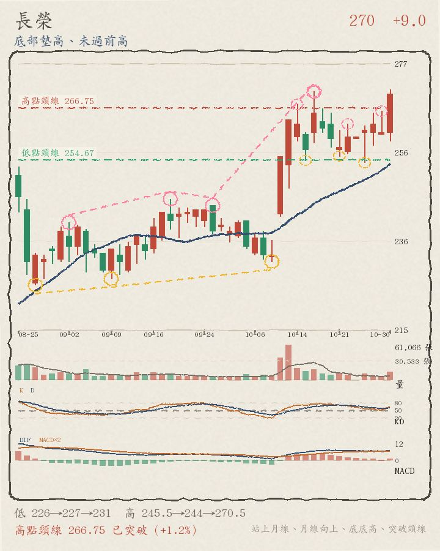
13:31 盤中 271.5（+4.02%），比加權指數強 6.55 個百分點、站上月線 252.15，已突破高點頸線 266.75，底部還在墊高（但高點沒同步創高）。
- 月線位置：現價 271.5 在月線 252.15 之上（+7.7%）；5 日線 261.1 也在月線之上（短均在上）；月線向上
- 量能：以已過交易時間推估，今天成交量約是 20 日均量的 1.68 倍（爆量），比 20 日均量大不少；上漲又量增，量價配合
- 關鍵價位：高點頸線 266.75 已站上；前一交易日高點 266（高於 2.1%）；今天盤中高點 271.5（高於 0.0%）；今天盤中低點 259（高於 4.8%）
- 轉折結構：低點 225.5、227、231 墊高（底底高），但高點 245.5、244、270.5 沒有同步創高；還沒確認的轉折低點 10-21 255.5、10-27 254；還沒確認的轉折高點 10-22 263、10-29 266（圖上虛線小圈）
世芯-KY 3661 上市
3435 -245.0（-6.66%）
區間或轉弱 盤中成交值 57.23 億・全榜第 36 名（上市第 29 名）・相對大盤 -4.13
好條件 0/7：無
不好條件 5/7：今日下跌、相對大盤弱、在月線之下、跌破昨日低點、月線下彎

13:31 盤中 3435（-6.66%），比加權指數弱 4.13 個百分點、跌破月線 3839.5，離高點頸線 3870 還差 11.2%，轉折還沒走出明顯方向。
- 月線位置：現價 3435 在月線 3839.5 之下（-10.5%）；5 日線 3593 也在月線之下（短均在下）；月線向下
- 量能：以已過交易時間推估，今天成交量約是 20 日均量的 0.79 倍（量平），比 20 日均量少很多
- 關鍵價位：高點頸線 3870 還沒突破，差 11.2%；前一交易日高點 3815（低於 10.0%）；今天盤中高點 3565（低於 3.6%）；今天盤中低點 3400（高於 1.0%）
- 轉折結構：低點 2630、3585、3260 與高點 3950、4490、3835 都沒有明顯遞增，屬於區間震盪或轉弱；還沒確認的轉折低點 10-22 3485、10-27 3455；還沒確認的轉折高點 10-21 3835、10-28 3825（圖上虛線小圈）
量平
↑ 回上方清單
智原 3035 上市
213.5 -18.0（-7.78%）
上升趨勢（底底高＋頭頭高） 盤中成交值 56.29 億・全榜第 37 名（上市第 30 名）・相對大盤 -5.25
好條件 5/7：站上月線、月線向上、底底高、頭頭高、突破頸線
不好條件 3/7：今日下跌、相對大盤弱、跌破昨日低點
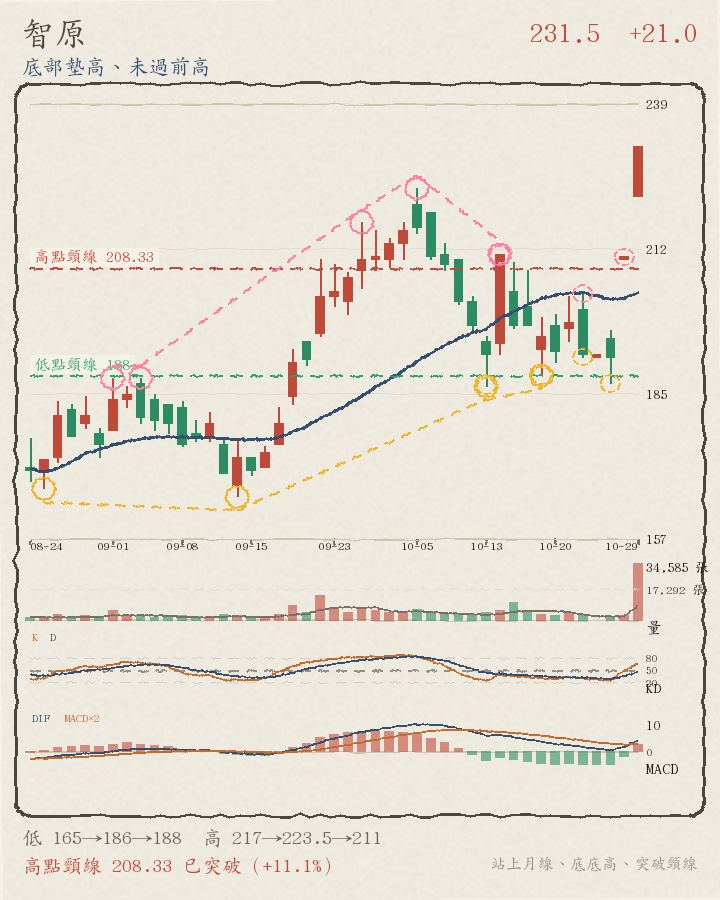
13:31 盤中 213.5（-7.78%），比加權指數弱 5.25 個百分點、站上月線 203.775，已突破高點頸線 207.25，轉折結構仍是底底高＋頭頭高。
- 月線位置：現價 213.5 在月線 203.775 之上（+4.8%）；5 日線 203.5 也在月線之下（短均在下）；月線向上
- 量能：以已過交易時間推估，今天成交量約是 20 日均量的 5.90 倍（爆量），比 20 日均量大不少；下跌卻量增，量價背離
- 關鍵價位：高點頸線 207.25 已站上；前一交易日高點 231.5（低於 7.8%）；今天盤中高點 221（低於 3.4%）；今天盤中低點 208.5（高於 2.4%）
- 轉折結構：低點 165、186、188 一路墊高、高點 217、223.5、211 也一路墊高，是底底高＋頭頭高；還沒確認的轉折低點 10-22 191.5、10-27 186.5；還沒確認的轉折高點 10-22 203.5、10-29 231.5（圖上虛線小圈）
緯創 3231 上市
184 -4.5（-2.39%）
高點墊高、底部不穩 盤中成交值 55.53 億・全榜第 38 名（上市第 31 名）・相對大盤 +0.14
好條件 3/7：月線向上、頭頭高、守住今日高檔（距今日高點 1% 內）
不好條件 3/7：今日下跌、在月線之下、跌破昨日低點

13:31 盤中 184（-2.39%），比加權指數強 0.14 個百分點、跌破月線 187.675，離高點頸線 192.25 還差 4.3%，高點還在墊高（但底部沒同步墊高）。
- 月線位置：現價 184 在月線 187.675 之下（-2.0%）；5 日線 190.7 也在月線之上（短均在上）；月線向上
- 量能：以已過交易時間推估，今天成交量約是 20 日均量的 0.75 倍（量平），比 20 日均量少很多
- 關鍵價位：高點頸線 192.25 還沒突破，差 4.3%；前一交易日高點 194（低於 5.2%）；今天盤中高點 185（低於 0.5%）；今天盤中低點 179.5（高於 2.5%）
- 轉折結構：高點 190.5、194.5、199.5 墊高（頭頭高），但低點 178、182.5、173.5 沒有同步墊高；還沒確認的轉折低點 10-27 186.5、10-29 187.5；還沒確認的轉折高點 10-21 199.5、10-28 196（圖上虛線小圈）
群創 3481 上市
42.65 -3.4（-7.28%）
區間或轉弱 盤中成交值 53.23 億・全榜第 39 名（上市第 32 名）・相對大盤 -4.75
好條件 0/7：無
不好條件 6/7：跌破前低、今日下跌、相對大盤弱、在月線之下、跌破昨日低點、月線下彎

13:31 盤中 42.65（-7.28%），比加權指數弱 4.75 個百分點、跌破月線 49.595，離高點頸線 49.12 還差 13.2%，轉折還沒走出明顯方向。
- 月線位置：現價 42.65 在月線 49.595 之下（-14.0%）；5 日線 46.84 也在月線之下（短均在下）；月線向下
- 量能：以已過交易時間推估，今天成交量約是 20 日均量的 0.77 倍（量平），比 20 日均量少很多
- 關鍵價位：已跌破前一個轉折低點；高點頸線 49.12 還在現價上方 13.2%；前一交易日高點 48.7（低於 12.4%）；今天盤中高點 43.6（低於 2.2%）；今天盤中低點 41.5（高於 2.8%）
- 轉折結構：低點 46.25、48.55、45.65 與高點 52.2、56.2、49.7 都沒有明顯遞增，屬於區間震盪或轉弱；還沒確認的轉折低點 10-27 46.25、10-29 45.7；還沒確認的轉折高點 10-27 48.95、10-29 48.7（圖上虛線小圈）
台玻 1802 上市
62.4 +0.4（+0.65%）
區間或轉弱 盤中成交值 52.11 億・全榜第 40 名（上市第 33 名）・相對大盤 +3.18
好條件 1/7：月線向上
不好條件 1/7：在月線之下

13:31 盤中 62.4（+0.65%），比加權指數強 3.18 個百分點、跌破月線 63.82，離高點頸線 68.97 還差 9.5%，轉折還沒走出明顯方向。
- 月線位置：現價 62.4 在月線 63.82 之下（-2.2%）；5 日線 65.4 也在月線之上（短均在上）；月線向上
- 量能：以已過交易時間推估，今天成交量約是 20 日均量的 0.79 倍（量平），比 20 日均量少很多；上漲但量縮，量價背離
- 關鍵價位：高點頸線 68.97 還沒突破，差 9.5%；前一交易日高點 65.6（低於 4.9%）；今天盤中高點 63.6（低於 1.9%）；今天盤中低點 58.8（高於 6.1%）
- 轉折結構：低點 57.5、56、56.6 與高點 61.7、61.7、73.6 都沒有明顯遞增，屬於區間震盪或轉弱；還沒確認的轉折低點 10-21 65.6、10-29 61.7；還沒確認的轉折高點 10-22 73.6、10-28 68.4（圖上虛線小圈）
群聯 8299 上櫃
1930 -120.0（-5.85%）
區間或轉弱 盤中成交值 51.72 億・全榜第 41 名（上櫃第 8 名）・相對大盤 -3.32
好條件 0/7：無
不好條件 5/7：今日下跌、相對大盤弱、在月線之下、跌破昨日低點、月線下彎

13:31 盤中 1930（-5.85%），比加權指數弱 3.32 個百分點、跌破月線 1987.5，離高點頸線 2125 還差 9.2%，轉折還沒走出明顯方向。
- 月線位置：現價 1930 在月線 1987.5 之下（-2.9%）；5 日線 1952 也在月線之下（短均在下）；月線向下
- 量能：以已過交易時間推估，今天成交量約是 20 日均量的 1.13 倍（量增），比 20 日均量大一些；下跌卻量增，量價背離
- 關鍵價位：高點頸線 2125 還沒突破，差 9.2%；前一交易日高點 2090（低於 7.7%）；今天盤中高點 1970（低於 2.0%）；今天盤中低點 1900（高於 1.6%）
- 轉折結構：低點 1900、2080、1785 與高點 2195、2160、2350 都沒有明顯遞增，屬於區間震盪或轉弱；還沒確認的轉折低點 10-22 1870、10-27 1865；還沒確認的轉折高點 10-22 1945、10-29 2090（圖上虛線小圈）
量增
↑ 回上方清單
世界 5347 上櫃
144 -12.5（-7.99%）
底部墊高、未過前高 盤中成交值 50.78 億・全榜第 42 名（上櫃第 9 名）・相對大盤 -5.46
好條件 1/7：底底高
不好條件 6/7：跌破前低、今日下跌、相對大盤弱、在月線之下、跌破昨日低點、月線下彎

13:31 盤中 144（-7.99%），比加權指數弱 5.46 個百分點、跌破月線 173.125，離高點頸線 170 還差 15.3%，底部還在墊高（但高點沒同步創高）。
- 月線位置：現價 144 在月線 173.125 之下（-16.8%）；5 日線 161.5 也在月線之下（短均在下）；月線向下
- 量能：以已過交易時間推估，今天成交量約是 20 日均量的 2.24 倍（爆量），比 20 日均量大不少；下跌卻量增，量價背離
- 關鍵價位：已跌破前一個轉折低點；高點頸線 170 還在現價上方 15.3%；前一交易日高點 166（低於 13.3%）；今天盤中高點 150.5（低於 4.3%）；今天盤中低點 141（高於 2.1%）
- 轉折結構：低點 147、152.5、159 墊高（底底高），但高點 195、170、170 沒有同步創高；還沒確認的轉折低點 10-27 158、10-29 154；還沒確認的轉折高點 10-22 170、10-28 170（圖上虛線小圈）
光寶科 2301 上市
239.5 -12.5（-4.96%）
區間或轉弱 盤中成交值 50.46 億・全榜第 43 名（上市第 34 名）・相對大盤 -2.43
好條件 0/7：無
不好條件 6/7：跌破前低、今日下跌、相對大盤弱、在月線之下、跌破昨日低點、月線下彎

13:31 盤中 239.5（-4.96%），比加權指數弱 2.43 個百分點、跌破月線 274.3，離高點頸線 264.5 還差 9.5%，轉折還沒走出明顯方向。
- 月線位置：現價 239.5 在月線 274.3 之下（-12.7%）；5 日線 255.4 也在月線之下（短均在下）；月線向下
- 量能：以已過交易時間推估，今天成交量約是 20 日均量的 1.47 倍（量增），比 20 日均量大不少；下跌卻量增，量價背離
- 關鍵價位：已跌破前一個轉折低點；高點頸線 264.5 還在現價上方 9.5%；前一交易日高點 261.5（低於 8.4%）；今天盤中高點 244（低於 1.8%）；今天盤中低點 228（高於 5.0%）
- 轉折結構：低點 278、278、254 與高點 328、299.5、304.5 都沒有明顯遞增，屬於區間震盪或轉弱；還沒確認的轉折低點 10-27 248、10-29 250；還沒確認的轉折高點 10-27 263、10-29 261.5（圖上虛線小圈）
旺矽 6223 上櫃
4660 -180.0（-3.72%）
區間或轉弱 盤中成交值 49.02 億・全榜第 44 名（上櫃第 10 名）・相對大盤 -1.19
好條件 1/7：守住今日高檔（距今日高點 1% 內）
不好條件 6/7：跌破前低、今日下跌、相對大盤弱、在月線之下、跌破昨日低點、月線下彎

13:31 盤中 4660（-3.72%），比加權指數弱 1.19 個百分點、跌破月線 5294.25，離高點頸線 5230 還差 10.9%，轉折還沒走出明顯方向。
- 月線位置：現價 4660 在月線 5294.25 之下（-12.0%）；5 日線 4905 也在月線之下（短均在下）；月線向下
- 量能：以已過交易時間推估，今天成交量約是 20 日均量的 1.15 倍（量增），比 20 日均量大不少；下跌卻量增，量價背離
- 關鍵價位：已跌破前一個轉折低點；高點頸線 5230 還在現價上方 10.9%；前一交易日高點 5150（低於 9.5%）；今天盤中高點 4670（低於 0.2%）；今天盤中低點 4390（高於 6.2%）
- 轉折結構：低點 5365、5090、4995 與高點 6060、5860、6160 都沒有明顯遞增，屬於區間震盪或轉弱；還沒確認的轉折低點 10-27 4730、10-29 4770；還沒確認的轉折高點 10-22 5170、10-29 5150（圖上虛線小圈）
雙鴻 3324 上櫃
1330 -135.0（-9.22%）
區間或轉弱 盤中成交值 48.48 億・全榜第 45 名（上櫃第 11 名）・相對大盤 -6.69
好條件 0/7：無
不好條件 6/7：今日下跌、相對大盤弱、在月線之下、貼近今日低點（1% 內）、跌破昨日低點、月線下彎

13:31 盤中 1330（-9.22%），比加權指數弱 6.69 個百分點、跌破月線 1456.5，離高點頸線 1511.67 還差 12.0%，轉折還沒走出明顯方向。
- 月線位置：現價 1330 在月線 1456.5 之下（-8.7%）；5 日線 1391 也在月線之下（短均在下）；月線向下
- 量能：以已過交易時間推估，今天成交量約是 20 日均量的 1.10 倍（量增），比 20 日均量大一些；下跌卻量增，量價背離
- 關鍵價位：高點頸線 1511.67 還沒突破，差 12.0%；前一交易日高點 1515（低於 12.2%）；今天盤中高點 1370（低於 2.9%）；今天盤中低點 1320（高於 0.8%）
- 轉折結構：低點 1480、1395、1320 與高點 1505、1750、1515 都沒有明顯遞增，屬於區間震盪或轉弱；還沒確認的轉折低點 10-22 1335、10-27 1310；還沒確認的轉折高點 10-21 1515、10-29 1515（圖上虛線小圈）
量增
↑ 回上方清單
高力 8996 上市
1445 -100.0（-6.47%）
區間或轉弱 盤中成交值 47.87 億・全榜第 46 名（上市第 35 名）・相對大盤 -3.94
好條件 0/7：無
不好條件 6/7：跌破前低、今日下跌、相對大盤弱、在月線之下、跌破昨日低點、月線下彎

13:31 盤中 1445（-6.47%），比加權指數弱 3.94 個百分點、跌破月線 1594.25，離高點頸線 1635 還差 11.6%，轉折還沒走出明顯方向。
- 月線位置：現價 1445 在月線 1594.25 之下（-9.4%）；5 日線 1543 也在月線之下（短均在下）；月線向下
- 量能：以已過交易時間推估，今天成交量約是 20 日均量的 0.85 倍（量平），比 20 日均量少一些
- 關鍵價位：已跌破前一個轉折低點；高點頸線 1635 還在現價上方 11.6%；前一交易日高點 1595（低於 9.4%）；今天盤中高點 1475（低於 2.0%）；今天盤中低點 1400（高於 3.2%）
- 轉折結構：低點 1200、1470、1455 與高點 1665、1800、1770 都沒有明顯遞增，屬於區間震盪或轉弱；還沒確認的轉折低點 10-27 1405、10-29 1495；還沒確認的轉折高點 10-27 1620、10-29 1595（圖上虛線小圈）
大量 3167 上市
940 -6.0（-0.63%）
上升趨勢（底底高＋頭頭高） 盤中成交值 46.26 億・全榜第 47 名（上市第 36 名）・相對大盤 +1.90
好條件 3/7：月線向上、底底高、頭頭高
不好條件 3/7：跌破前低、今日下跌、在月線之下
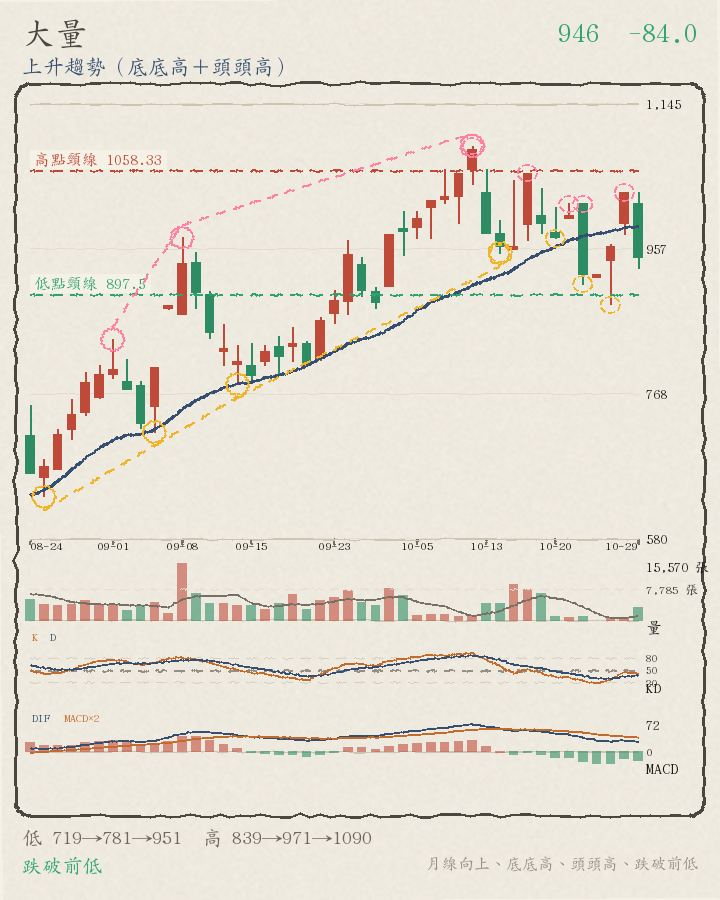
13:31 盤中 940（-0.63%），比加權指數強 1.90 個百分點、跌破月線 986，離高點頸線 1051.25 還差 10.6%，轉折結構仍是底底高＋頭頭高。
- 月線位置：現價 940 在月線 986 之下（-4.7%）；5 日線 956.8 也在月線之下（短均在下）；月線向上
- 量能：以已過交易時間推估，今天成交量約是 20 日均量的 1.37 倍（量增），比 20 日均量大不少；下跌卻量增，量價背離
- 關鍵價位：已跌破前一個轉折低點；高點頸線 1051.25 還在現價上方 10.6%；前一交易日高點 1030（低於 8.7%）；今天盤中高點 960（低於 2.1%）；今天盤中低點 897（高於 4.8%）
- 轉折結構：低點 719、781、951 一路墊高、高點 839、971、1090 也一路墊高，是底底高＋頭頭高；還沒確認的轉折低點 10-27 884、10-29 931；還沒確認的轉折高點 10-28 1030、10-29 1030（圖上虛線小圈）
晶豪科 3006 上市
278 -4.5（-1.59%）
高點墊高、底部不穩 盤中成交值 45.98 億・全榜第 48 名（上市第 37 名）・相對大盤 +0.94
好條件 2/7：站上月線、頭頭高
不好條件 2/7：今日下跌、月線下彎
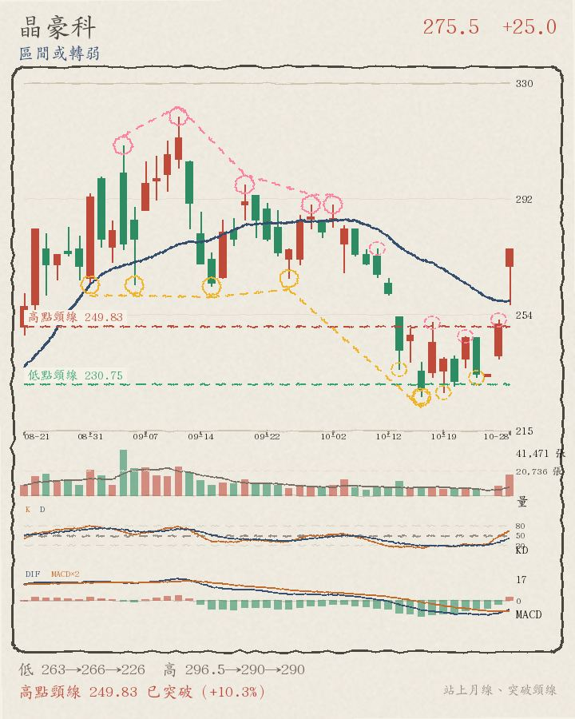
13:31 盤中 278（-1.59%），比加權指數強 0.94 個百分點、站上月線 258.075，離高點頸線 292 還差 4.8%，高點還在墊高（但底部沒同步墊高）。
- 月線位置：現價 278 在月線 258.075 之上（+7.7%）；5 日線 255.3 也在月線之下（短均在下）；月線向下
- 量能：以已過交易時間推估，今天成交量約是 20 日均量的 2.01 倍（爆量），比 20 日均量大不少；下跌卻量增，量價背離
- 關鍵價位：高點頸線 292 還沒突破，差 4.8%；前一交易日高點 291.5（低於 4.6%）；今天盤中高點 282（低於 1.4%）；今天盤中低點 264（高於 5.3%）
- 轉折結構：高點 296.5、290、290 墊高（頭頭高），但低點 263、265.5、226.5 沒有同步墊高；還沒確認的轉折低點 10-19 228、10-22 233；還沒確認的轉折高點 10-21 246.5、10-29 291.5（圖上虛線小圈）
貿聯-KY 3665 上市
1620 -85.0（-4.99%）
區間或轉弱 盤中成交值 42.57 億・全榜第 49 名（上市第 38 名）・相對大盤 -2.46
好條件 0/7：無
不好條件 6/7：跌破前低、今日下跌、相對大盤弱、在月線之下、跌破昨日低點、月線下彎

13:31 盤中 1620（-4.99%），比加權指數弱 2.46 個百分點、跌破月線 2145.25，離高點頸線 2367.5 還差 31.6%，轉折還沒走出明顯方向。
- 月線位置：現價 1620 在月線 2145.25 之下（-24.5%）；5 日線 1800 也在月線之下（短均在下）；月線向下
- 量能：以已過交易時間推估，今天成交量約是 20 日均量的 0.82 倍（量平），比 20 日均量少很多
- 關鍵價位：已跌破前一個轉折低點；高點頸線 2367.5 還在現價上方 31.6%；前一交易日高點 1800（低於 10.0%）；今天盤中高點 1650（低於 1.8%）；今天盤中低點 1570（高於 3.2%）
- 轉折結構：低點 2095、1930、1810 與高點 2375、2685、2080 都沒有明顯遞增，屬於區間震盪或轉弱；還沒確認的轉折低點 10-27 1715、10-29 1690；還沒確認的轉折高點 10-21 2080、10-27 1890（圖上虛線小圈）
瑞昱 2379 上市
803 +9.0（+1.13%）
上升趨勢（底底高＋頭頭高） 盤中成交值 42.42 億・全榜第 50 名（上市第 39 名）・相對大盤 +3.66
好條件 7/7：站上月線、月線向上、底底高、頭頭高、突破頸線、攻擊量（量增＋上漲）、守住今日高檔（距今日高點 1% 內）
不好條件 0/7：無
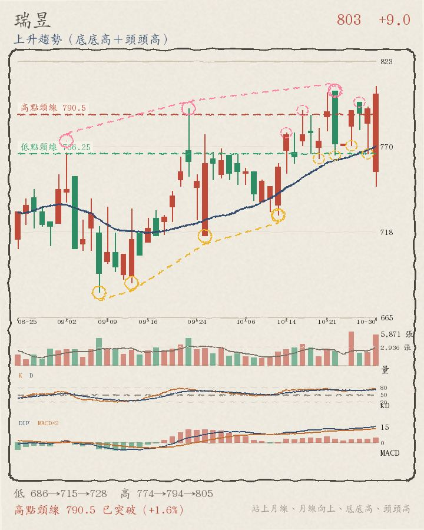
13:31 盤中 803（+1.13%），比加權指數強 3.66 個百分點、站上月線 768.35，已突破高點頸線 790.5，轉折結構仍是底底高＋頭頭高。
- 月線位置：現價 803 在月線 768.35 之上（+4.5%）；5 日線 784.4 也在月線之上（短均在上）；月線向上
- 量能：以已過交易時間推估，今天成交量約是 20 日均量的 2.16 倍（爆量），比 20 日均量大不少；上漲又量增，量價配合
- 關鍵價位：高點頸線 790.5 已站上；前一交易日高點 795（高於 1.0%）；今天盤中高點 808（低於 0.6%）；今天盤中低點 746（高於 7.6%）
- 轉折結構：低點 686、715、728 一路墊高、高點 774、794、805 也一路墊高，是底底高＋頭頭高；還沒確認的轉折低點 10-27 771、10-29 766；還沒確認的轉折高點 10-22 805、10-28 798（圖上虛線小圈）
京元電子 2449 上市
253.5 -16.0（-5.94%）
區間或轉弱 盤中成交值 42.07 億・全榜第 51 名（上市第 40 名）・相對大盤 -3.41
好條件 0/7：無
不好條件 6/7：跌破前低、今日下跌、相對大盤弱、在月線之下、跌破昨日低點、月線下彎

13:31 盤中 253.5（-5.94%），比加權指數弱 3.41 個百分點、跌破月線 283.625，離高點頸線 282.67 還差 10.3%，轉折還沒走出明顯方向。
- 月線位置：現價 253.5 在月線 283.625 之下（-10.6%）；5 日線 268.2 也在月線之下（短均在下）；月線向下
- 量能：以已過交易時間推估，今天成交量約是 20 日均量的 0.62 倍（量縮），比 20 日均量少很多
- 關鍵價位：已跌破前一個轉折低點；高點頸線 282.67 還在現價上方 10.3%；前一交易日高點 276.5（低於 8.3%）；今天盤中高點 259.5（低於 2.3%）；今天盤中低點 250（高於 1.4%）
- 轉折結構：低點 253、284、255 與高點 330、310、284.5 都沒有明顯遞增，屬於區間震盪或轉弱；還沒確認的轉折低點 10-22 262、10-29 268；還沒確認的轉折高點 10-22 284.5、10-28 280（圖上虛線小圈）
富世達 6805 上市
2385 -40.0（-1.65%）
區間或轉弱 盤中成交值 41.14 億・全榜第 52 名（上市第 41 名）・相對大盤 +0.88
好條件 1/7：站上月線
不好條件 2/7：今日下跌、月線下彎
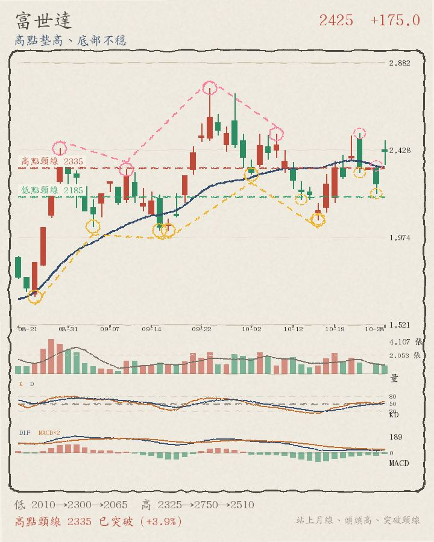
13:31 盤中 2385（-1.65%），比加權指數強 0.88 個百分點、站上月線 2335.5，離高點頸線 2487.5 還差 4.1%，轉折還沒走出明顯方向。
- 月線位置：現價 2385 在月線 2335.5 之上（+2.1%）；5 日線 2361 也在月線之上（短均在上）；月線向下
- 量能：以已過交易時間推估，今天成交量約是 20 日均量的 1.11 倍（量增），比 20 日均量大一些；下跌卻量增，量價背離
- 關鍵價位：高點頸線 2487.5 還沒突破，差 4.1%；前一交易日高點 2490（低於 4.2%）；今天盤中高點 2410（低於 1.0%）；今天盤中低點 2225（高於 7.2%）
- 轉折結構：低點 2010、2300、2065 與高點 2750、2510、2515 都沒有明顯遞增，屬於區間震盪或轉弱；還沒確認的轉折低點 10-22 2310、10-27 2200；還沒確認的轉折高點 10-22 2515、10-29 2490（圖上虛線小圈）
華通 2313 上市
203.5 -10.0（-4.68%）
上升趨勢（底底高＋頭頭高） 盤中成交值 40.99 億・全榜第 53 名（上市第 42 名）・相對大盤 -2.15
好條件 2/7：底底高、頭頭高
不好條件 6/7：跌破前低、今日下跌、相對大盤弱、在月線之下、跌破昨日低點、月線下彎

13:31 盤中 203.5（-4.68%），比加權指數弱 2.15 個百分點、跌破月線 236.4，離高點頸線 232 還差 12.3%，轉折結構仍是底底高＋頭頭高。
- 月線位置：現價 203.5 在月線 236.4 之下（-13.9%）；5 日線 220.5 也在月線之下（短均在下）；月線向下
- 量能：以已過交易時間推估，今天成交量約是 20 日均量的 0.60 倍（量縮），比 20 日均量少很多
- 關鍵價位：已跌破前一個轉折低點；高點頸線 232 還在現價上方 12.3%；前一交易日高點 224（低於 9.2%）；今天盤中高點 207（低於 1.7%）；今天盤中低點 198（高於 2.8%）
- 轉折結構：低點 213、219、228 一路墊高、高點 235、261、266 也一路墊高，是底底高＋頭頭高；還沒確認的轉折低點 10-27 215、10-29 212.5；還沒確認的轉折高點 10-21 266、10-27 229（圖上虛線小圈）
頎邦 6147 上櫃
196.5 -6.5（-3.20%）
高點墊高、底部不穩 盤中成交值 39.54 億・全榜第 54 名（上櫃第 12 名）・相對大盤 -0.67
好條件 1/7：頭頭高
不好條件 5/7：今日下跌、相對大盤弱、在月線之下、跌破昨日低點、月線下彎

13:31 盤中 196.5（-3.20%），比加權指數弱 0.67 個百分點、跌破月線 215.725，離高點頸線 220 還差 10.7%，高點還在墊高（但底部沒同步墊高）。
- 月線位置：現價 196.5 在月線 215.725 之下（-8.9%）；5 日線 207.7 也在月線之下（短均在下）；月線向下
- 量能：以已過交易時間推估，今天成交量約是 20 日均量的 0.65 倍（量縮），比 20 日均量少很多
- 關鍵價位：高點頸線 220 還沒突破，差 10.7%；前一交易日高點 222（低於 11.5%）；今天盤中高點 200.5（低於 2.0%）；今天盤中低點 190（高於 3.4%）
- 轉折結構：高點 238、238、217 墊高（頭頭高），但低點 208、211、194.5 沒有同步墊高；還沒確認的轉折低點 10-27 199.5、10-29 200.5；還沒確認的轉折高點 10-21 217、10-28 223（圖上虛線小圈）
禾伸堂 3026 上市
706 -61.0（-7.95%）
區間或轉弱 盤中成交值 38.42 億・全榜第 55 名（上市第 43 名）・相對大盤 -5.42
好條件 0/7：無
不好條件 7/7：跌破前低、今日下跌、相對大盤弱、在月線之下、貼近今日低點（1% 內）、跌破昨日低點、月線下彎

13:31 盤中 706（-7.95%），比加權指數弱 5.42 個百分點、跌破月線 800.2，離高點頸線 780.5 還差 9.5%，轉折還沒走出明顯方向。
- 月線位置：現價 706 在月線 800.2 之下（-11.8%）；5 日線 747.2 也在月線之下（短均在下）；月線向下
- 量能：以已過交易時間推估，今天成交量約是 20 日均量的 0.48 倍（量縮），比 20 日均量少很多
- 關鍵價位：已跌破前一個轉折低點；高點頸線 780.5 還在現價上方 9.5%；前一交易日高點 778（低於 9.3%）；今天盤中高點 732（低於 3.6%）；今天盤中低點 705（高於 0.1%）
- 轉折結構：低點 796、793、726 與高點 881、888、859 都沒有明顯遞增，屬於區間震盪或轉弱；還沒確認的轉折低點 10-27 704、10-29 729；還沒確認的轉折高點 10-27 783、10-29 778（圖上虛線小圈）
中信金 2891 上市
75.8 +0.5（+0.66%）
高點墊高、底部不穩 盤中成交值 37.83 億・全榜第 56 名（上市第 44 名）・相對大盤 +3.19
好條件 4/7：站上月線、月線向上、頭頭高、攻擊量（量增＋上漲）
不好條件 0/7：無

13:31 盤中 75.8（+0.66%），比加權指數強 3.19 個百分點、站上月線 71.44，離高點頸線 75.98 還差 0.2%，高點還在墊高（但底部沒同步墊高）。
- 月線位置：現價 75.8 在月線 71.44 之上（+6.1%）；5 日線 74.86 也在月線之上（短均在上）；月線向上
- 量能：以已過交易時間推估，今天成交量約是 20 日均量的 1.43 倍（量增），比 20 日均量大不少；上漲又量增，量價配合
- 關鍵價位：高點頸線 75.98 還沒突破，差 0.2%；前一交易日高點 76.2（低於 0.5%）；今天盤中高點 75.8（高於 0.0%）；今天盤中低點 74（高於 2.4%）
- 轉折結構：高點 69.5、72、75.3 墊高（頭頭高），但低點 66、67.1、67.3 沒有同步墊高；還沒確認的轉折低點 10-20 71.5、10-28 73.8；還沒確認的轉折高點 10-27 76.9、10-29 76.2（圖上虛線小圈）
威剛 3260 上櫃
346.5 -15.5（-4.28%）
區間或轉弱 盤中成交值 36.87 億・全榜第 57 名（上櫃第 13 名）・相對大盤 -1.75
好條件 0/7：無
不好條件 5/7：今日下跌、相對大盤弱、在月線之下、跌破昨日低點、月線下彎

13:31 盤中 346.5（-4.28%），比加權指數弱 1.75 個百分點、跌破月線 356.9，離高點頸線 382 還差 9.3%，轉折還沒走出明顯方向。
- 月線位置：現價 346.5 在月線 356.9 之下（-2.9%）；5 日線 342.4 也在月線之下（短均在下）；月線向下
- 量能：以已過交易時間推估，今天成交量約是 20 日均量的 2.33 倍（爆量），比 20 日均量大不少；下跌卻量增，量價背離
- 關鍵價位：高點頸線 382 還沒突破，差 9.3%；前一交易日高點 378.5（低於 8.5%）；今天盤中高點 357（低於 2.9%）；今天盤中低點 343（高於 1.0%）
- 轉折結構：低點 373.5、327、328 與高點 428、405.5、385.5 都沒有明顯遞增，屬於區間震盪或轉弱；還沒確認的轉折低點 10-23 328、10-27 328；還沒確認的轉折高點 10-16 367、10-29 378.5（圖上虛線小圈）
廣達 2382 上市
317.5 -0.5（-0.16%）
高點墊高、底部不穩 盤中成交值 36.24 億・全榜第 58 名（上市第 45 名）・相對大盤 +2.37
好條件 2/7：頭頭高、守住今日高檔（距今日高點 1% 內）
不好條件 4/7：今日下跌、在月線之下、跌破昨日低點、月線下彎

13:31 盤中 317.5（-0.16%），比加權指數強 2.37 個百分點、跌破月線 325.7，離高點頸線 341.5 還差 7.0%，高點還在墊高（但底部沒同步墊高）。
- 月線位置：現價 317.5 在月線 325.7 之下（-2.5%）；5 日線 323.9 也在月線之下（短均在下）；月線向下
- 量能：以已過交易時間推估，今天成交量約是 20 日均量的 1.02 倍（量平），跟 20 日均量差不多
- 關鍵價位：高點頸線 341.5 還沒突破，差 7.0%；前一交易日高點 330（低於 3.8%）；今天盤中高點 318（低於 0.2%）；今天盤中低點 308（高於 3.1%）
- 轉折結構：高點 351.5、349、337.5 墊高（頭頭高），但低點 330、311、311 沒有同步墊高；還沒確認的轉折低點 10-27 321.5、10-29 318；還沒確認的轉折高點 10-21 328.5、10-27 338（圖上虛線小圈）
川湖 2059 上市
9680 -200.0（-2.02%）
區間或轉弱 盤中成交值 36.2 億・全榜第 59 名（上市第 46 名）・相對大盤 +0.51
好條件 0/7：無
不好條件 3/7：今日下跌、在月線之下、月線下彎

13:31 盤中 9680（-2.02%），比加權指數強 0.51 個百分點、跌破月線 10733.2，離高點頸線 10348.3 還差 6.5%，轉折還沒走出明顯方向。
- 月線位置：現價 9680 在月線 10733.2 之下（-9.8%）；5 日線 9870 也在月線之下（短均在下）；月線向下
- 量能：以已過交易時間推估，今天成交量約是 20 日均量的 0.65 倍（量縮），比 20 日均量少很多
- 關鍵價位：高點頸線 10348.3 還沒突破，差 6.5%；前一交易日高點 10250（低於 5.6%）；今天盤中高點 9840（低於 1.6%）；今天盤中低點 9345（高於 3.6%）
- 轉折結構：低點 11665、11700、9500 與高點 13305、13500、10580 都沒有明顯遞增，屬於區間震盪或轉弱；還沒確認的轉折低點 10-27 9475、10-29 9600；還沒確認的轉折高點 10-21 10580、10-28 10290（圖上虛線小圈）
量縮
↑ 回上方清單
旺宏 2337 上市
96.1 -3.9（-3.90%）
區間或轉弱 盤中成交值 35.47 億・全榜第 60 名（上市第 47 名）・相對大盤 -1.37
好條件 0/7：無
不好條件 6/7：跌破前低、今日下跌、相對大盤弱、在月線之下、跌破昨日低點、月線下彎
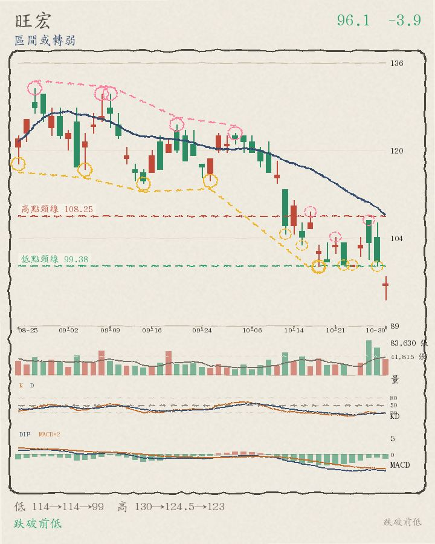
13:31 盤中 96.1（-3.90%），比加權指數弱 1.37 個百分點、跌破月線 109.725，離高點頸線 108.25 還差 11.2%，轉折還沒走出明顯方向。
- 月線位置：現價 96.1 在月線 109.725 之下（-12.4%）；5 日線 101.1 也在月線之下（短均在下）；月線向下
- 量能：以已過交易時間推估，今天成交量約是 20 日均量的 1.25 倍（量增），比 20 日均量大不少；下跌卻量增，量價背離
- 關鍵價位：已跌破前一個轉折低點；高點頸線 108.25 還在現價上方 11.2%；前一交易日高點 107（低於 10.2%）；今天盤中高點 97.4（低於 1.3%）；今天盤中低點 93.2（高於 3.1%）
- 轉折結構：低點 114、114.5、99.2 與高點 130、124.5、123 都沒有明顯遞增，屬於區間震盪或轉弱；還沒確認的轉折低點 10-23 99.5、10-29 99.3；還沒確認的轉折高點 10-21 104.5、10-28 107.5（圖上虛線小圈）
藥華藥 6446 上市
1190 -50.0（-4.03%）
區間或轉弱 盤中成交值 35.18 億・全榜第 61 名（上市第 48 名）・相對大盤 -1.50
好條件 2/7：站上月線、月線向上
不好條件 3/7：今日下跌、相對大盤弱、跌破昨日低點
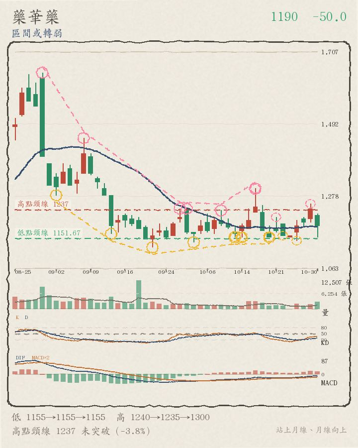
13:31 盤中 1190（-4.03%），比加權指數弱 1.50 個百分點、站上月線 1188，離高點頸線 1237 還差 3.8%，轉折還沒走出明顯方向。
- 月線位置：現價 1190 在月線 1188 之上（+0.2%）；5 日線 1190 也在月線之上（短均在上）；月線向上
- 量能：以已過交易時間推估，今天成交量約是 20 日均量的 1.76 倍（爆量），比 20 日均量大不少；下跌卻量增，量價背離
- 關鍵價位：高點頸線 1237 還沒突破，差 3.8%；前一交易日高點 1255（低於 5.2%）；今天盤中高點 1225（低於 2.9%）；今天盤中低點 1155（高於 3.0%）
- 轉折結構：低點 1155、1155、1155 與高點 1240、1235、1300 都沒有明顯遞增，屬於區間震盪或轉弱；還沒確認的轉折低點 10-22 1160、10-27 1145；還沒確認的轉折高點 10-21 1215、10-29 1255（圖上虛線小圈）
大甲 2221 上櫃
148.5 -11.0（-6.90%）
區間或轉弱 盤中成交值 35.03 億・全榜第 62 名（上櫃第 14 名）・相對大盤 -4.37
好條件 1/7：突破頸線
不好條件 5/7：今日下跌、相對大盤弱、在月線之下、跌破昨日低點、月線下彎
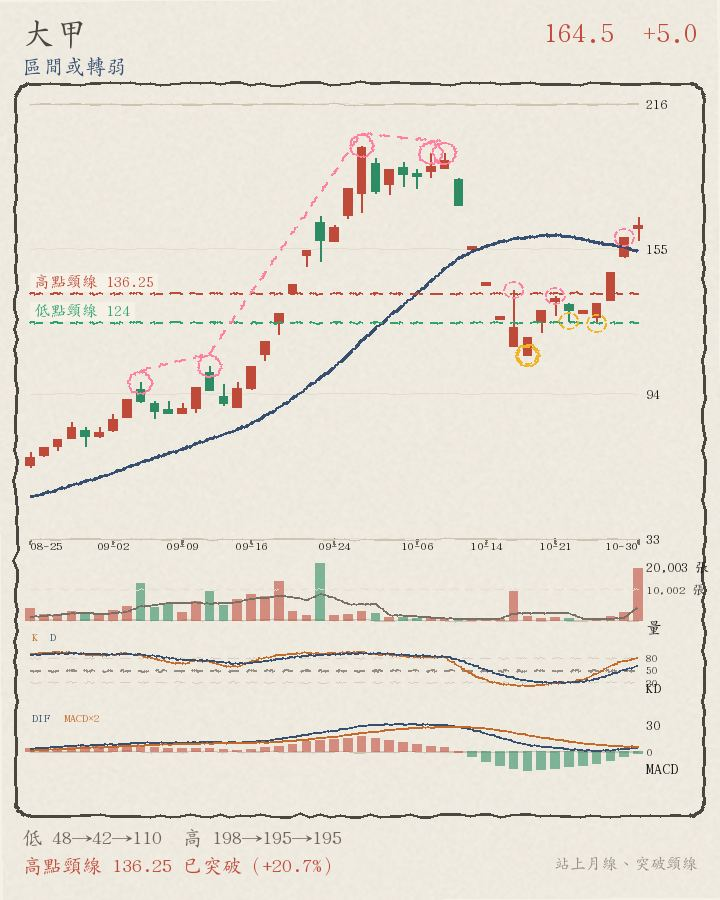
13:31 盤中 148.5（-6.90%），比加權指數弱 4.37 個百分點、跌破月線 155.55，已突破高點頸線 136.25，轉折還沒走出明顯方向。
- 月線位置：現價 148.5 在月線 155.55 之下（-4.5%）；5 日線 138.9 也在月線之下（短均在下）；月線向下
- 量能：以已過交易時間推估，今天成交量約是 20 日均量的 16.43 倍（爆量），比 20 日均量大不少；下跌卻量增，量價背離
- 關鍵價位：高點頸線 136.25 已站上；前一交易日高點 159.5（低於 6.9%）；今天盤中高點 168（低於 11.6%）；今天盤中低點 148.5（高於 0.0%）
- 轉折結構：低點 48.15、42.1、110 與高點 198、195、195 都沒有明顯遞增，屬於區間震盪或轉弱；還沒確認的轉折低點 10-22 124.5、10-27 123.5；還沒確認的轉折高點 10-21 135、10-29 159.5（圖上虛線小圈）
矽力*-KY 6415 上市
502 -22.0（-4.20%）
上升趨勢（底底高＋頭頭高） 盤中成交值 33.41 億・全榜第 63 名（上市第 49 名）・相對大盤 -1.67
好條件 4/7：站上月線、月線向上、底底高、頭頭高
不好條件 2/7：今日下跌、相對大盤弱

13:31 盤中 502（-4.20%），比加權指數弱 1.67 個百分點、站上月線 462.575，離高點頸線 510.5 還差 1.7%，轉折結構仍是底底高＋頭頭高。
- 月線位置：現價 502 在月線 462.575 之上（+8.5%）；5 日線 494.2 也在月線之上（短均在上）；月線向上
- 量能：以已過交易時間推估，今天成交量約是 20 日均量的 1.37 倍（量增），比 20 日均量大不少；下跌卻量增，量價背離
- 關鍵價位：高點頸線 510.5 還沒突破，差 1.7%；前一交易日高點 551（低於 8.9%）；今天盤中高點 526（低於 4.6%）；今天盤中低點 486.5（高於 3.2%）
- 轉折結構：低點 385、406.5、412 一路墊高、高點 443、475、513 也一路墊高，是底底高＋頭頭高；還沒確認的轉折低點 10-22 467、10-27 456.5；還沒確認的轉折高點 10-22 508、10-29 551（圖上虛線小圈）
鴻勁 7769 上市
4940 -250.0（-4.82%）
區間或轉弱 盤中成交值 32.85 億・全榜第 64 名（上市第 50 名）・相對大盤 -2.29
好條件 0/7：無
不好條件 6/7：跌破前低、今日下跌、相對大盤弱、在月線之下、跌破昨日低點、月線下彎

13:31 盤中 4940（-4.82%），比加權指數弱 2.29 個百分點、跌破月線 5560.25，離高點頸線 5543.33 還差 10.9%，轉折還沒走出明顯方向。
- 月線位置：現價 4940 在月線 5560.25 之下（-11.2%）；5 日線 5303 也在月線之下（短均在下）；月線向下
- 量能：以已過交易時間推估，今天成交量約是 20 日均量的 0.94 倍（量平），比 20 日均量少一些
- 關鍵價位：已跌破前一個轉折低點；高點頸線 5543.33 還在現價上方 10.9%；前一交易日高點 5610（低於 11.9%）；今天盤中高點 5025（低於 1.7%）；今天盤中低點 4765（高於 3.7%）
- 轉折結構：低點 5620、5380、5035 與高點 7160、6615、6515 都沒有明顯遞增，屬於區間震盪或轉弱；還沒確認的轉折低點 10-27 5070、10-29 5170；還沒確認的轉折高點 10-22 5480、10-29 5610（圖上虛線小圈）
濱川 1569 上櫃
92.6 +0.3（+0.33%）
上升趨勢（底底高＋頭頭高） 盤中成交值 28.26 億・全榜第 65 名（上櫃第 15 名）・相對大盤 +2.86
好條件 5/7：站上月線、月線向上、底底高、頭頭高、攻擊量（量增＋上漲）
不好條件 0/7：無
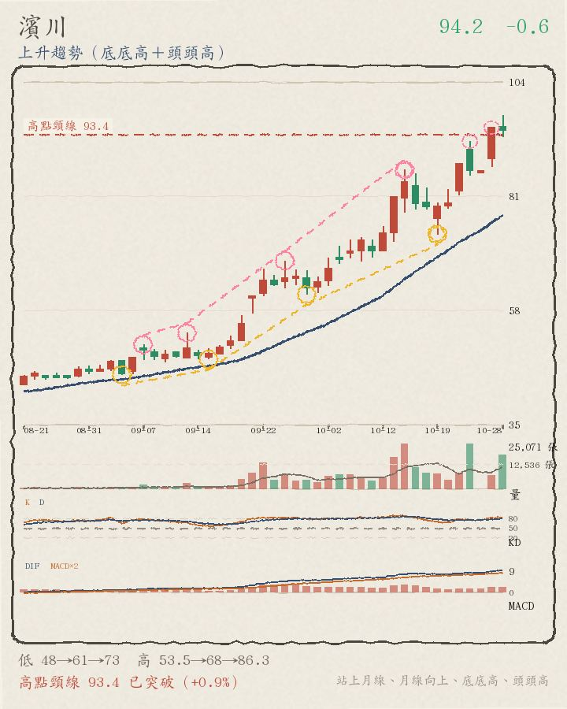
13:31 盤中 92.6（+0.33%），比加權指數強 2.86 個百分點、站上月線 78.775，轉折結構仍是底底高＋頭頭高。
- 月線位置：現價 92.6 在月線 78.775 之上（+17.6%）；5 日線 91.7 也在月線之上（短均在上）；月線向上
- 量能：以已過交易時間推估，今天成交量約是 20 日均量的 2.90 倍（爆量），比 20 日均量大不少；上漲又量增，量價配合
- 關鍵價位：前一交易日高點 99.6（低於 7.0%）；今天盤中高點 95.8（低於 3.3%）；今天盤中低點 86.5（高於 7.1%）
- 轉折結構：低點 48.3、61.3、73.4 一路墊高、高點 53.5、68、86.3 也一路墊高，是底底高＋頭頭高；還沒確認的轉折低點 10-19 73.4、10-29 92.1；還沒確認的轉折高點 10-22 92、10-29 99.6（圖上虛線小圈）
精測 6510 上櫃
2820 -60.0（-2.08%）
區間或轉弱 盤中成交值 26.62 億・全榜第 66 名（上櫃第 16 名）・相對大盤 +0.45
好條件 0/7：無
不好條件 5/7：跌破前低、今日下跌、在月線之下、跌破昨日低點、月線下彎
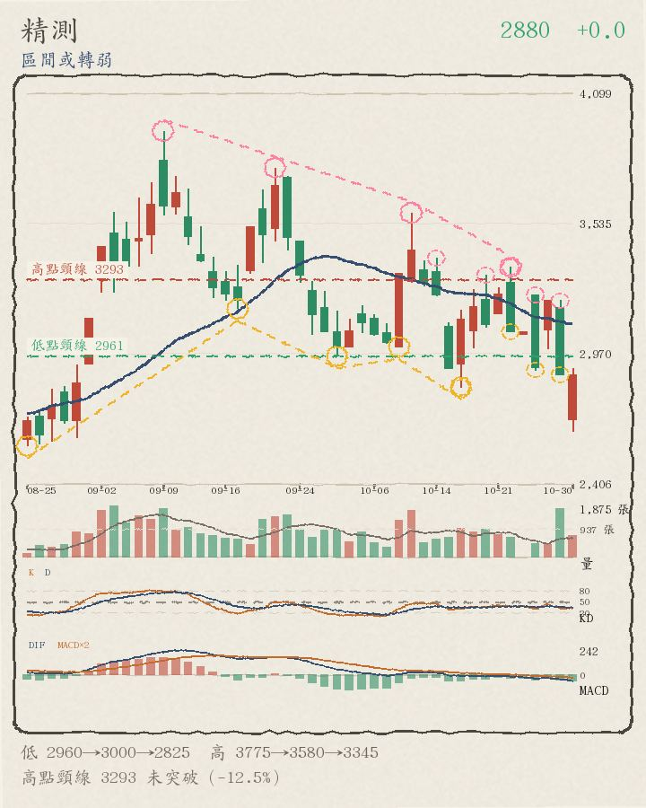
13:31 盤中 2820（-2.08%），比加權指數強 0.45 個百分點、跌破月線 3110，離高點頸線 3293 還差 14.4%，轉折還沒走出明顯方向。
- 月線位置：現價 2820 在月線 3110 之下（-9.3%）；5 日線 3024 也在月線之下（短均在下）；月線向下
- 量能：以已過交易時間推估，今天成交量約是 20 日均量的 1.18 倍（量增），比 20 日均量大不少；下跌卻量增，量價背離
- 關鍵價位：已跌破前一個轉折低點；高點頸線 3293 還在現價上方 14.4%；前一交易日高點 3200（低於 11.9%）；今天盤中高點 2905（低於 2.9%）；今天盤中低點 2635（高於 7.0%）
- 轉折結構：低點 2960、3000、2825 與高點 3775、3580、3345 都沒有明顯遞增，屬於區間震盪或轉弱；還沒確認的轉折低點 10-27 2900、10-29 2880；還沒確認的轉折高點 10-27 3225、10-29 3200（圖上虛線小圈）
欣銓 3264 上櫃
221.5 -15.0（-6.34%）
區間或轉弱 盤中成交值 23.99 億・全榜第 67 名（上櫃第 17 名）・相對大盤 -3.81
好條件 0/7：無
不好條件 6/7：跌破前低、今日下跌、相對大盤弱、在月線之下、跌破昨日低點、月線下彎

13:31 盤中 221.5（-6.34%），比加權指數弱 3.81 個百分點、跌破月線 252.9，離高點頸線 256.5 還差 13.6%，轉折還沒走出明顯方向。
- 月線位置：現價 221.5 在月線 252.9 之下（-12.4%）；5 日線 243 也在月線之下（短均在下）；月線向下
- 量能：以已過交易時間推估，今天成交量約是 20 日均量的 0.55 倍（量縮），比 20 日均量少很多
- 關鍵價位：已跌破前一個轉折低點；高點頸線 256.5 還在現價上方 13.6%；前一交易日高點 244.5（低於 9.4%）；今天盤中高點 229（低於 3.3%）；今天盤中低點 216（高於 2.5%）
- 轉折結構：低點 238、238、241.5 與高點 289.5、291.5、279.5 都沒有明顯遞增，屬於區間震盪或轉弱；還沒確認的轉折低點 10-22 245、10-28 234.5；還沒確認的轉折高點 10-22 279.5、10-27 261.5（圖上虛線小圈）
萬潤 6187 上櫃
1195 -65.0（-5.16%）
區間或轉弱 盤中成交值 23.91 億・全榜第 68 名（上櫃第 18 名）・相對大盤 -2.63
好條件 1/7：月線向上
不好條件 4/7：今日下跌、相對大盤弱、在月線之下、跌破昨日低點

13:31 盤中 1195（-5.16%），比加權指數弱 2.63 個百分點、跌破月線 1405.25，離高點頸線 1440 還差 17.0%，轉折還沒走出明顯方向。
- 月線位置：現價 1195 在月線 1405.25 之下（-15.0%）；5 日線 1282 也在月線之下（短均在下）；月線向上
- 量能：以已過交易時間推估，今天成交量約是 20 日均量的 0.65 倍（量縮），比 20 日均量少很多
- 關鍵價位：高點頸線 1440 還沒突破，差 17.0%；前一交易日高點 1340（低於 10.8%）；今天盤中高點 1210（低於 1.2%）；今天盤中低點 1135（高於 5.3%）
- 轉折結構：低點 1185、1180、1180 與高點 1435、1270、1680 都沒有明顯遞增，屬於區間震盪或轉弱；還沒確認的轉折低點 10-27 1245、10-29 1250；還沒確認的轉折高點 10-20 1430、10-28 1360（圖上虛線小圈）
合晶 6182 上櫃
93.9 -6.6（-6.57%）
區間或轉弱 盤中成交值 19.78 億・全榜第 69 名（上櫃第 19 名）・相對大盤 -4.04
好條件 0/7：無
不好條件 6/7：跌破前低、今日下跌、相對大盤弱、在月線之下、跌破昨日低點、月線下彎

13:31 盤中 93.9（-6.57%），比加權指數弱 4.04 個百分點、跌破月線 117.05，離高點頸線 140 還差 32.9%，轉折還沒走出明顯方向。
- 月線位置：現價 93.9 在月線 117.05 之下（-19.8%）；5 日線 103.3 也在月線之下（短均在下）；月線向下
- 量能：以已過交易時間推估，今天成交量約是 20 日均量的 0.36 倍（量縮），比 20 日均量少很多
- 關鍵價位：已跌破前一個轉折低點；高點頸線 140 還在現價上方 32.9%；前一交易日高點 105.5（低於 11.0%）；今天盤中高點 97（低於 3.2%）；今天盤中低點 92.4（高於 1.6%）
- 轉折結構：低點 104、100、103.5 與高點 140、140、113 都沒有明顯遞增，屬於區間震盪或轉弱；還沒確認的轉折低點 10-27 100.5、10-29 100.5；還沒確認的轉折高點 10-22 113、10-27 107.5（圖上虛線小圈）
華星光 4979 上櫃
447 -30.0（-6.29%）
區間或轉弱 盤中成交值 19.15 億・全榜第 70 名（上櫃第 20 名）・相對大盤 -3.76
好條件 0/7：無
不好條件 5/7：今日下跌、相對大盤弱、在月線之下、跌破昨日低點、月線下彎
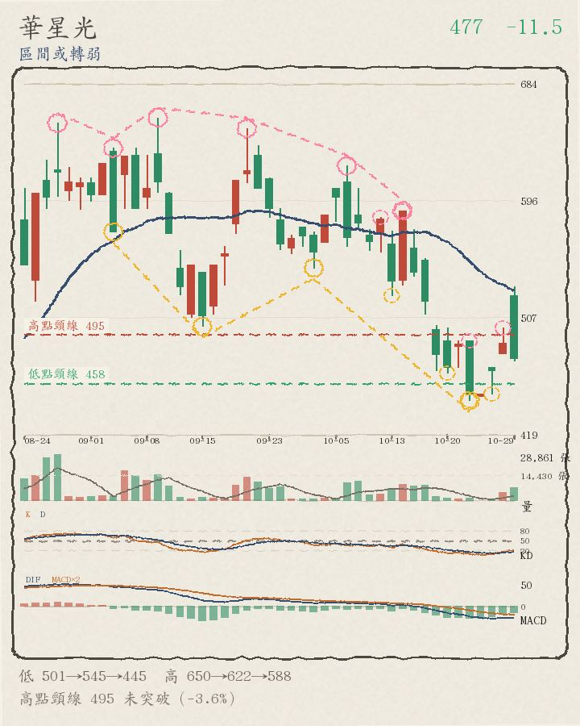
13:31 盤中 447（-6.29%），比加權指數弱 3.76 個百分點、跌破月線 527.95，離高點頸線 654 還差 31.7%，轉折還沒走出明顯方向。
- 月線位置：現價 447 在月線 527.95 之下（-15.3%）；5 日線 466.6 也在月線之下（短均在下）；月線向下
- 量能：以已過交易時間推估，今天成交量約是 20 日均量的 1.00 倍（量平），跟 20 日均量差不多
- 關鍵價位：高點頸線 654 還沒突破，差 31.7%；前一交易日高點 531（低於 15.8%）；今天盤中高點 461（低於 3.0%）；今天盤中低點 436.5（高於 2.4%）
- 轉折結構：低點 501、545、445 與高點 650、622、588 都沒有明顯遞增，屬於區間震盪或轉弱；還沒確認的轉折低點 10-27 450、10-29 475；還沒確認的轉折高點 10-22 490、10-29 531（圖上虛線小圈）
量平
↑ 回上方清單
← 回股市觀察